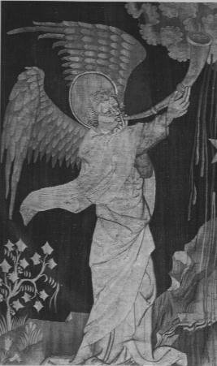
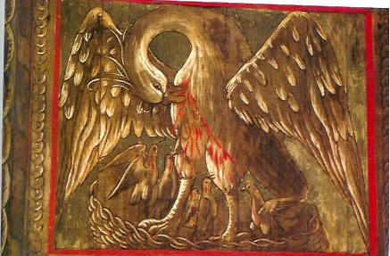

LETTRE AUX VRAIS DISCIPLES D'HERMÈS CONTENANT SIX PRINCIPALES CLEFS DE LA PHILOSOPHIE SECRÈTE extrait du Triomphe Hermétique ou la Pierre Philosophale Victorieuse
Auteur : Limojon de Saint-Didier,
Edition : 1699
revu le 6 janvier 2002
IntroductionVoici une notice biographique sur notre auteur. Elle est tirée du Dictionnaire universel des sciences morale, économique, politique et diplomatique, ou Bibliothèque de l'homme d'état et du citoyen, tome 23, [réd. et mis en ordre par M. Jean-Baptiste-René Robinet, Londres, les libraires associés, 1777-1783].
Limojon, (Alexandre-Toussaint de) Sieur de Saint-didier, Auteur politique,Comme on le voit, rien sur les écrits alchimiques d'Alexandre-Toussaint. Comme Philalèthe avant lui, c'est un anonymat soigneux qu'il devait conserver.Cet auteur, natif du comtat Venaissin, fait secrétaire du comte d'Avaux, amabassadeur de France à Venise, depuis le commencement de l'année 1672, jusqu'à la fin de l'année 1677, a fait un livre qui a pour titre : La Ville et la république de Venise, 1 vol. in-12 de 904 pages imprimé à Paris en 1680. Le séjour que Saint-didier avait fait à Venise, l'emploi qu'il y avait eu, les informations qu'il y avait prises, les chroniques et les annales manuscrites, le livre de l'origine des familles, et les relations de plusieurs ministres qu'il avait consultés, à ce qu'il nous assure, lui inspirèrent de faire un tableau de la ville de Venise, du gouvernement, et de la manière de vivre des Vénitiens, toutes choses qui lui ont paru si rares et si singulières, qu'il ne les croit pas moins différentes de ce qu'on voit dans le reste de l'Europe, que la Chine l'est de la France. L'auteur était à la veille de donner son ouvrage lorsque celui d'Amelot de la Houssaye vit le jour, et la publication de celui-ci suspendit pendant quelque temps son dessein ; mais il l'exéxuta enfin, après en avoir retranché les choses que d'autres ont écrites. Son livre est divisé en trois parties. La premiere est de la fituation avantageuse de Venise, & de ce qu'on y voit de plus remarquable. La seconde, de l'Origine de la république de Venise & de la forme de son gouvernement. La troisième , des moeurs et des manières des Vénitiens, avec les descriptions de tous les divertissemens publics de Venise.
Venise est une des plus grandes singularités de l'Europe, tant par sa situation que par son gouvernement & les moeurs de ses habitans. L'idée que Saint-Didier nous donne de ces trois choses est exacte, & son ouvrage peut être regardé comme un excellent supplément de celui d'Amelot.
Le même Saint-Didier a fait l'histoire des négociations de Nimegue , laquelle a été aussi imprimée à Paris chez Claude Barbin en 1680 , in-12. Comme tout ce qui s'est passé de considérable dans le monde depuis le commencement de l'assemblée de Nimegue, a eu tant de rapport aux affaires qu'on y traitait, que les ambassadeurs des puissances unies ne faisaient des démarches & ne prenaient des mesures que sur les divers événements que la guerre produisit, l'auteur n'en a presque point laissé passer sans les toucher. Il a ajouté à cela un extrait des plus importantes écritures qui se sont faites touchant les différens traités de paix. Il y rapporte les principaux incidents qu'il y a eu parmi les ambassadeurs pour le cérémonial ; et il y donne un crayon, une légère peinture du génie de chacun de ces ambassadeurs qui composaient cette assemblée.Alexandre Limojon de Saint-Didier n'est pas connu du grand public qui s'intéresse à l'alchimie. Pourtant, on lui doit des traités importants sur l'Art d'Hermès. Georges Ranque [La Pierre philosophale, Robert Laffont, 1972] a considéré cet Artiste comme suffisamment intéressant pour en donner le Triomphe hermétique ou la Pierre philosophale victorieuse [Henry Wetstein, Amsterdam, 1699] suivi de l'Ancienne guerre des Chevaliers ou entretien de la Pierre des philosophes avec l'Or et le Mercure, complété par l'Entretien d'Eudoxe et de Pyrophile sur l'Ancienne guerre des Chevaliers et enfin par la Lettre aux vrais disciples d'Hermès contenant Six principales Clefs de la Philosophie secrète. Laissons G. Ranque s'exprimer :
Le troisième traité que nous proposons a été édité à Amsterdam, en français, en 1699 sous le titre Le Triomphe Hermétique ou la Pierre Philosophale victorieuse par un auteur donnant pour anagramme « Dives sieur ardens S... », qui s'explicite « Sanctus Desiderius ». D'après Lenglet du Fresnoy, on l'attribue à un sieur Limojon de Saint-Didier, qui fut secrétaire de l'Ambassade de France à Venise. On connaît du même auteur une Lettre sur le Secret du Grand OEuvre au sujet de ce qu'Aristée a laissé par écrit à son fils touchant le Magistère, édité à La Haye en 1686. C'est de là que j'ai extrait le texte reproduit plus haut des Paroles d'Aristée à son Fils. On y trouve aussi l'indication suivante à propos deA cela, nous ajouterons que cette Lettre de Limojon pourrait orienter le lecteur vers de fausses pistes. Ainsi, Limojon y parle des trois oeuvres. On pourrait donc croire qu'il traite de la préparation des matières premières, puis de la préparation du Mercure, enfin de la Grande coction. Mais il n'évoque en fait que le 3ème oeuvre. Pour lui, le 1er oeuvre n'est que la dissolution ou « oeuvre au noir », tel qu'il fut popularisé par Marguerite de Yourcenar. Puis, le 2ème oeuvre n'est que celui de la conjonction des luminaires ; enfin, le 3ème est celui où prend lieu la fermentation de la Pierre. Le passage qui réclame le plus d'attention est la Troisième Clef où Limojon dit des choses intéressantes, touchant la putréfaction [dissolution radicale des Soufres]. Nous avons pu glisser çà et là quelques articles fondamentaux du Dictionnaire mytho-hermétique de Pernéty. Signalons que cet ouvrage imposant est disponible au format .pdf sur le site Hermétisme et alchimie.
Basile Valentin :« Voyez comment il parle dans ses Douze Clefs, et surtout dans la seconde ; mais voyez particulièrement ce qu'il dit dans le petit traité qu'il a écrit, De rebus naturalibus et supernaturalibus, aux chapitres des esprits des Métaux. Il montre en termes clairs, quels corps il faut joindre et détruire, pour en tirer cette liqueur spirituelle si recherchée de tous les Philosophes ».
Le Triomphe Hermétique a été publié pour la dernière fois en 1741, dans la Bibliothèque des Philosophes Chimiques de J.M.D.R. (Jean Maugin de Richebourg). Outre la gravure emblématique et son explication, que nous avons déjà reproduites dans le cours de cette étude, il comprend essentiellement trois parties. La première est une traduction française d'un petit traité édité originairement en allemand à Leipzig en 1604, intitulé L'Ancienne Guerre des Chevaliers, qui a pour thème une discussion supposée entre la Pierre des Philosophes, sujet de l'OEuvre, et l'or et le mercure métalliques. La deuxième partie, sous la forme d'un entretien entre Eudoxe, le maître, et Pyrophile, le disciple, commente les passages significatifs ou énigmatiques de la première, et établit en quelque sorte la théorie du Magistère. La troisième partie intitulée « Lettre aux vrais Disciples d'Hermès » concerne plus spécialement la pratique, principalement la préparation du Mercure et du Soufre. Elle est évidemment beaucoup plus ambiguë, mais semble ne pas orienter le lecteur vers de fausses voies. Dans l'ensemble cet ouvrage se présente plus rationnellement que beaucoup d'autres traités hermétiques, cependant il date d'une époque où les connaissances chimiques étaient rudimentaires. I1 faut donc interpréter avec beaucoup de précaution ce qu'il avance à ce sujet. Ainsi Eudoxe déclare que le feu secret, considéré comme une substance chimique, est de la nature de la chaux. Actuellement, avec des connaissances élémentaires de chimie, on en déduirait qu'il s'agit d'un sel de calcium. La chose est possible, mais non certaine. En 1700, tous les oxydes métalliques étaient nommés des chaux. D'autre part la chaux proprement dite n'était pas considérée comme d'origine métallique, mais comme une pierre ayant absorbé du feu au cours de sa cuisson, ou calcination, et qui le rejetait sous forme de chaleur, quand on la mettait au contact de l'eau, par suite de l'opposition entre les éléments Feu et Eau. Limojon peut faire allusion à l'une quelconque de ces propriétés.
Contrairement à ce qu'on pourrait croire, il nous est donc beaucoup plus difficile de démêler la pensée des anciens auteurs, que pour leurs contemporains. Notre science trop complète n'utilise plus les modes de raisonnement qui représentaient la logique de l'époque. D'autre part notre ignorance relative de la terminologie de l'ancienne chimie ne nous permet pas d'éclaircir des allusions, ou des allégories, qui devaient, pour des gens cultivés, sembler à peu près transparentes. Prenons un exemple : Eudoxe dit : « Que les Astres de Vénus et de Diane croissante te soient propices ». On peut comprendre qu'il est question d'une opération à faire au printemps (Vénus), dans le premier quartier de la lune (Diane croissante). Mais il peut s'agir de toute autre chose: nous avons vu que les Astres de Vénus peuvent signifier l'étoile de l'antimoine. D'autre part corniculata Diana peut aussi se traduire par Diane cornue, autrement dit la Lune cornée, le chlorure d'argent. Limojon indiquerait donc simplement une réaction de préparation du chlorure d'antimoine. Nous avons reproduit le texte du Triomphe Hermétique d'après l'édition de 1699, mais pour la commodité du lecteur nous en avons modernisé l'orthographe, sans changer toutefois ni majuscules ni ponctuation de l'époque.Les traités de Lambsprinck, de Basile Valentin et de Limojon de Saint-Didier ne seront sans doute pas suffisants pour orienter avec certitude ceux de nos lecteurs que le sujet intéresse. Même s'ils ont complété leur documentation par les oeuvres de Nicolas Flamel et de Philalèthe, il restera bien des indéterminations pour tenter de comprendre la manière de faire le Mercure animé des Philosophes.
Nous leur conseillons, s'ils le peuvent, de prendre connaissance, et de faire des extraits des textes suivants qui sont des classiques de la Philosophie Hermétique. Nous les avons rangés dans l'ordre de difficulté croissante, selon notre point de vue personnel.
- Le Livre de la Philosophie naturelle des Métaux, de Bernard Trévisan.
- La nouvelle Lumière Chymique, du Cosmopolite.
- L'entretien du R oy Calid et du Philosophe Morien.
- L'Opuscule de la Philosophie naturelle des Métaux, de Denys Zachaire.
- Le Livre d'Artephius.
- La Somme de Perfection, de Geber.
- L'Ouvrage secret de la Philosophie d'Hermès, de d'Espagnet.
- La Fontaine des Amoureux de Science, de Jehan la Fontaine.
- La Tourbe des Philosophes.
- Les sept Chapitre, d'Hermès.
- Le dialogue de Marie et d'Aros.Georges Ranque
Les citations des alchimistes modernes de Limojon sont assez nombreuses. signalons dans le Mystère des Cathédrales, p. 104 :"C'est là ce ver empoisonné qui infecte tout par son venin, dont parle l'Ancienne Guerre des Chevaliers..."
en parlant du Mercure dont la nature est incisive - pontique - et dissolvante. Fulcanelli nous signale que cet ouvrage rare a été réédité par la revue Atlantis [mais cette note de bas de page est certainement de la main d'E. Canseliet]. Puis, une autre citation portant là encore sur le feu secret, pour désigner un feu qui n'est pas actuellement chaud [l'Eau sèche - seiche - qui ne mouille point les mains, bien qu'il le soit en substance, ou plutôt en puissance]. Une troisème citation, là encore sur le dissolvant :
"L'or perd sa couronne, - en perdant sa couleur, - durant un certain laps de temps, et s'en voit dépourvu jusqu'à ce qu'il soit parvenu au degr de supériorité où l'art et la nature peuvent le porter. Il en hérite alors d'une autre « infiniment plus noble que la première », ainsi que nous l'assure Limojon de Saint-Didier..." [Myst.,p .181]
et cette opération n'est autre qu'une réincrudation. Une dernière citation vaut pour tout le 3ème oeuvre :
"Ajoutons encore que le fameux poisson du Cosmopolite, qu'il appelle Echineis, est l'oursin (echinus), l'ourson, la petite ourse, constellation dans laquelle se trouve l'étoile polaire. Les tests d'oursin fossiles, que l'on rencontre en abondance dans tous les terrains, présentent une face rayonnée en forme d'étoile. C'est pourquoi Limojon de Saint-Didier recommande aux investigateurs de régler leur route « par la vue de l'étoile du nord »..." [Myst., p. 191]
On ne saurait s'imaginer l'importance de ce passage. Car Fulcanelli attire littéralement parlant notre regard sur le concept d'aimant, d'étoile et cite pratiquement la matière qu'il faut élire pour le dissolvant. Le miracle est que l'étoile rayonnée s'y trouve bien. Pour bien contourner la difficulté, nous signalerons au lecteur l'un de ses noms vulgaires : marmaroV. Il saura en quoi cette matière se distingue par son éclat brillant et pourquoi les anciens alchimistes l'ont assimilé à l'antimoine [stilbew, suivre à la trace...]. Dans ses Demeures Philosophales [DM], Fulcanelli revient sur Alexandre-Toussaint Limojon de Saint-Didier. D'abord dans le chapitre la Cabale hermétique, lorsqu'il évoque l'anagramme : Dives sicut ardens, c'est-à-dire Sanctus Didiereus. Il nous signale aussi l'anagramme du Président Jean d'Espagnet [1,2] : Spes mea est in agno. Dans la Salamandre de Lisieux, il évoque ce passage de la Sixième Clef où Limojon se plaint amèrement d'être resté quinze ans sans pouvoir utiliser les matières, faute du feu adéquat pour les cuire. Dans le Mythe alchimique d'Adam et Eve, Fulcanelli cite un extrait de l'Entretien d'Eudoxe et de Pyrophile :
"... la femme qui est propre à la pierre et qui doit lui être unie, est cette fontaine d'eau vive, dont la source toute celeste, qui a particulierement son centre dans le Soleil, et dans la Lune, produit ce clair et precieux ruisseau des Sages, qui coule dans la mer des Philosophes, laquelle environne tout le monde; ce n'est pas sans fondement, que cette divine fontaine est appelée par cet Autheur la femme de la pierre; quelques uns l'ont représentée sous la forme d'une Nymphe céleste; quelques autres lui donnent le nom de la chaste Diane, dont la pureté et la virginité n'est point souillée par le lien spirituel qui l'unit à la pierre; en un mot, cette conjonction magnetique est le mariage magique du Ciel avec la Terre, dont quelques Philosophes ont parlé: de sorte que la source feconde de la teinture phisique, qui opere de si grandes merveilles, prend naissance dans cette union conjugale toute misterieuse." [Entretien d'Eudoxe et de Pyrophile sur L'ancienne Guerre des Chevaliers, 1699]
et souhaite par là analyser ce qu'il appelle le secret des deux mercures. Il entend donc parler du 1er Mercure ou Mercure commun, l'eau-vive prime de Limojon et du second Mercure ou Mercure Philosophique qui est l'eau-vive seconde, laquelle contient en germe les deux Soufres. Dans le chapitre Louis d'Estissac, Fulcanelli cite un extrait de la Troisème Clef qui est, rappelons-le, la plus importante du traité. L'Adepte nous dit ceci du vieillard dont parle Limojon, et qui se rapporte au Mercure :
"...C'est, dans les motifs de notre cheminée, ce que figurent aussi les coquilles de Saint-Jacques, appelées aussi bénitiers parce qu'on y conserve l'eau bénite ou benoite, qualifications que les Anciens ont appliqués à l'eau mercurielle." [DM, I, p. 339]
C'est, sous une formulation légèrement différente, l'exacte réplique du passage des Mystères que nous avons reproduit supra. Plus loin, p. 380, Fulcanelli tire une longue citation de la Lettre, suivie de ce commentaire, que nous avons déjà vue dans la section des Principes :
"Et pourtant, les chercheurs qui ont, avec succès, surmonté les premiers obstacles et puisé l'eau vive de l'antique Fontaine, possèdent une clef capable d'ouvrir les portes du laboratoire hermétique." [DM, I, p. 381]
Toujours dans le même chapitre, Fulcanelli revient sur la principale propriété du Mercure après avoir cité un autre passage de la Lettre :
"Ce caractère important de l'ascension du subtil par la séparation de l'épais valut à l'opération du mercure des sages d'être appelée sublimation. Notre dissolvant, tout esprit, y joue le rôle symbolique de l'aigle enlevant sa proie, et c'est la raison pour laquelle Philalèthe, le Cosmopolite, Cyliani, d'Espagnet et plusieurs autres nous recommandent de lui donner l'essor, en insistant sur la nécessité de le faire voler." [DM, I, p. 386]
Ce caractère volatil du Mercure ne doit cependant jouer qu'à la fin de la Grande coction, par voie sèche, car une sublimation prématurée empêcherait la croissance des cristaux. Encore dans le même chapitre [Louis d'Estissac], Fulcanelli nous assure que :
"Limojon de Saint-didier énonce donc une vérité primordiale lorqu'il assure que « la pierre des philosophes naît de la destruction de deux corps." [DM, I, p. 411]
L'Adepte voulant dire par là que la pierre résulte de la conjonction de deux corps après qu'ils aient été réduits en leur première matière [humide radical] avant d'être réincrudés. Dans le 2ème volume des DM, Fulcanelli nous dit encore que :
"Limojon de Saint-Didier assure que ce feu est de la nature de la chaux." [DM, II, p. 74]
C'est là une remarque fondamentale mais elle n'explique pas tout. Car de quelle chaux s'agit-il ? Certes, la chaux éteinte, résultant d'un mariage entre l'eau et le feu, semble un corps désigné par cabale pour être utile à l'oeuvre, mais en quoi ? Nous pensons que la solution de ce problème réside dans la capacité qu'a la chaux, de même que le charbon, de pouvoir opérer des réductions. L'autre possibilité est celle de la chaux des métaux, c'est-à-dire des métaux brûlés et réduits en leur premier principe. Nous en avons parlé dans la section de l'Olympe hermétique. C'est ensuite le parcours des caissons du château de Dampierre-sur-Boutonne qui donne à Fulcanelli l'occasion de revenir à Limojon, et notamment de celui, très curieux, où :

FIGURE I
caisson n°5 de la 6ème série"Une main céleste, dont le bras est bardé de fer, brandit l'épée et la spatule. Sur le phylactère, on lit ces mots latins : .PERCVTAM.ET.SANABO. Je blesserai et je guérirai [...] Pensée ésotérique d'une importance capitale dans l'exécution du Magistère. C'est la première clef, assure Limojon de Saint-Didier, celle qui ouvre les prisons obscures dans lesquelles le soufre est renfermé [...]" [DM, II, p. 166]
C'est l'évocation de la phase de dissolution radicale ou putréfaction, par laquelle les prisons obscures, c'est-à-dire les métaux, s'ouvrent en libérant leur humide radical, leur chaux ou si l'on préfère leur Soufre rouge. C'est, enfin, dans le chapitre du Cadran solaire du palais Holyrood, que Fulcanelli évoque pour la dernière fois Limojon :
"[le cadran] nous apprend que le mercure est un sel, - ce que nouss avions déjà, -et que ce sel tire son origine du règne minéral. C'est d'ailleurs ce qu'affirment et répètent à l'envi Claveus, le Cosmopolite, Limojon de Saint-Didier, Basile Valentin [1,2], Huginus à Barma, Batsdorff, etc., lorsqu'ils nous enseignent que le sel des métaux est la pierre des philosophes." [DM, II, p. 313]
Nous ajouterons que ce sel tire son origine d'efflorescences, et c'est en quoi il possède aussi une origine végétale, mais aussi de vertu céleste pour des raisons que nous avons indiquées dans trois sections [cf. Gardes du corps - blasons alchimiques - Olympe hermétique]
Eugène Canseliet, dans son Alchimie expliquée sur ses Textes classiques, cite abondamment Limojon. D'abord, en évoquant la figure de Gaston Bachelard, mais de façon assez agressive, car Bachelard, à en croire Canseliet, n'a exprimé dans son attitude critique vis-à-vis de l'alchimie, que l'expression de sa propre libido [p. 79]. Mais comme souvent, Canseliet avait souvent une attitude assez agressive et a parfois manqué de recul. Gaston Bachelard s'est intéressé à l'alchimie. C'est déjà beaucoup et que ce philosophe, à la pointe de l'actualité scientifique ou artistique, ce professeur de Sorbonne le moins encombré de tradition universitaire, eut le génie de redonner vie ou sens à des images oubliées, voila qui ne peut laisser indifférent tout « vrai disciple d'Hermès ». il faut citer la Psychanalyse du feu [Paris, NRF, 1938] ; Le vin et la vigne des alchimistes [Formes et couleurs, Lausanne, n°1, La Table, 1946] ; des interviews enregistrées par l'O.R.T.F : l'Alchimie au Moyen âge [17 mai 1954] - Persistance de la rêverie alchimique [25 octobre 1954] - le Rêve alchimique [3 novembre 1954] - l'Alchimie [15 novembre 1954].On trouve quelques détails biographiques sur Limojon dans les Transmutations alchimiques de Bernard Husson [J'ai Lu, 1974] :
Les descriptions de la coction alchimique décrites par Claude Limojon de Saint-DidierNous trouvons de brèves, mais nettes allusions à ce fait dans le manuscrit inédit, rédigé au XVIIe siècle, mais dont ne subsiste, à la bibliothèque d'Orléans, qu'une copie du XVIIe siècle, intitulée : Lettre d'un Philosophe à son amy sur le Grand OEuvre, par Claude Limojon de SaintDidier. Il s'agit peut-être d'un parent du philosophe et diplomate bien connu, Alexandre-Toussaint Limojon de Saint-Didier, sur la mort de qui l'histoire se révèle contradictoire. Périt-il bien au cours de la mission qui lui avait été confiée, d'aller porter à Louis XIV des plis confidentiels, relatifs à la libération de l'Irlande, manquée par Jacques II ? Limojon s'embarqua d'Irlande le 24 novembre 1689, à bord de la frégate « La Tempête ». Son supérieur direct, le comte d'Avaux, dont il était secrétaire et homme de confiance depuis 1670, prouve l'estime en laquelle il tenait son écuyer dans la lettre à M. de Seignelay envoyée de Dublin le 27 novembre 1689 :
« Le roy d'Angleterre (c'est-à-dire le prétendant éternellement malheureux et incapable, Jacques II) a souhaité d'envoyer incessamment Thomas Howard en France... sur une des frégattes que S.M. luy a présentées... comme c'est une affaire de la dernière conséquence, j'ay cru nécessaire d'envoyer le Sr. de Saint-Didier avec Mylord Thomas Howard parce qu'il pourra donner toutes les instructions dont on pourrait avoir besoin en pareille occasion. »
Mais la frégate « La Tempête », qui avait fait voile malgré un temps affreux, ne parvînt jamais à destination. Les biographes de Limojon déclarent qu'il périt pendant un naufrage au cours de al traversée. Cependant les recherches que nous avons faites aux archives de la marine, tout en nous permettant de constater que « La Tempête » avait effectivement été rayée des cadres en 1689, ne permettent pas de préciser si le navire avait sombré ou s'il avait été capturé par les Anglais. Cette dernière hypothèse n'est pas à exclure, aux termes de la dépêche adressée de Versailles, 4 janvier 1690, par M. de Croissy au comte d'Avaux, qui porte en addenda, de la propre main de Croissy :
« M. de Saint-Didier n'est pas arrivé, ce qui met met fort en peine, craignant avec beaucoup de raisons qu'il n'ait été pris. »
En contradiction avec tous ses autres biographes Lenglet Dufrénoy, dans sa Méthode pour étudier l'histoire, Paris 1729, faisant mention d'Alexandre-Toussaint de Limojon, Sieur de Saint-Didier, en tant qu'auteur pendant ses ambassades, déclare brièvement in fine (p. 461) : « Il est mort en 1692. » Cela confirmerait les dires de l'Adepte Naxagoras qui, dans son Aureum Vellus, affirme avoir rencontré le neveu de Limojon à Dantzig, et lui avoir remis des manuscrits de son oncle, mort de la peste en cette ville . En remerciement, ce neveu lui montra la « teinture » qu'il tenait de Limojon et fit une transmutation devant lui. Nous avons pensé depuis longtemps que Limojon de SaintDidier devait ses connaissances hermétiques, à des tiers, et probablement des parents ; la région du Dauphiné, dont était originaire sa famille, ayant été un foyer actif de la tradition alchimique. Seules des investigations généalogiques permettraient peut-être de savoir la parenté précise de ce Claude Limojon de Saint-Didier avec l'auteur renommé de traités hermétiques, Alexandre-Toussaint.
Quoi qu'il en soit, le manuscrit conservé à Orléans que le catalogue lui attribue ne laisse pas d'être fort intéressant, dans la longue description qu'il donne de diverses phases d'élaboration du « particulier du Cosmopolite moderne au règne minéral », selon ce qu'il en apprit de lui-même il y a quelques années. Pour plusieurs raisons qu'il serait trop long d'exposer ici,nous croyons que ce « Cosmopolite moderne » n'était autre que l'anonyme auteur du traité paru à Aix-en-Provence en 1669, intitulé : La nature au découvert par le chevalier inconnu. C'est lui également qui rédigea le délicieux texte intitulé L'accouchement de la pierre des Philosophes, resté inédit en français, mais publié en allemand sous le titre de Kinderbett des Steins der Weisen.
Bernard husson
LETTRE AUX VRAIS DISCIPLES D'HERMÈS CONTENANT
SIX PRINCIPALES CLEFS DE LA PHILOSOPHIE SECRÈTE
Si j'escrivois cette lettre pour persuader la verité de nôtre Philosophie à ceux, qui s'imaginent qu'elle n'est qu'une vaine idée, et un pur Paradoxe, je suivrois l'exemple de plusieurs maîtres en ce grand art; je tâcherois de convaincre de leurs erreurs ces sortes d'esprits, en leur demontrant la solidité des principes de notre science, appuyés sur les loix, et sur les operations de la nature, et je ne parlerois que legerement de ce qui regarde sa pratique; mais comme j'ay un dessein tout different, et que je n'escris que pour vous seuls, sages Disciples d'Hermes, et vrays Enfans de l'art, mon unique but est de vous servir de guide dans une route si difficile à suivre. Nostre pratique en effet est un chemin dans les sables1, où l'on doit se conduire par l'estoile du Nord2, plutost que par les vestiges qu'on y voit imprimés. La confusion des traces, qu'un nombre presqu'infini de personnes y ont laissées, est si grande, et on y trouve tant de differents sentiers, qui menent presque tous dans des deserts affreux, qu'il est presque impossible de ne pas s'égarer de la veritable voye, que les seuls sages favorisés du Ciel, ont heureusement sçeu deméler, et reconnoistre.
Cette confusion arréte tout court les enfans de l'art, les uns dez le commencement, les autres dans le milieu de cette course Philosophique, et quelques uns mesme lors qu'ils aprochent de la fin de ce penible voyage, et qu'ils commencent à decouvrir le terme heureux de leur entreprise; mais qui ne s'aperçoivent pas, que le peu de chemin, qui leur reste à faire, est le plus difficile. Ils ignorent que les envieux de leur bonheur ont creusé des fosses, et des precipices au milieu de la voye, et que faute de sçavoir les détours secrets, par où les sages evitent ces dangereux pieges, ils perdent malheureusement tout l'avantage qu'ils avoient acquis, dans le mesme temps, qu'ils s'imaginoient d'avoir surmonté toutes les difficultez.
Je vous avouë sincerement, que la pratique de nostre art est la plus difficile chose du monde, non par raport à ses operations, mais à l'égard des difficultés qu'il y a, de l'apprendre distinctement dans les livres des Philosophes : car si d'un côté elle est appellée avec raison, un jeu d'enfans ; de l'autre elle requiert en ceux, qui en cherchent la verité par leur travail et leur estude, une connoissance profonde des Principes, et des operations de la nature dans les trois genres; mais particulierement dans le genre mineral et metallique. C'est un grand point de trouver la veritable matiere, qui est le sujet de nostre oeuvre; il faut percer pour cela mille voiles obscurs, dont elle a esté envelopée; il faut la distinguer par son propre nom, entre un million de noms extraordinaires, dont les Philosophes l'ont diversement exprimée; il en faut comprendre toutes les proprietés, et juger de tous les degrés de perfection, que l'art est capable de lui donner; il faut connoître le feu secret des sages qui est le seul agent qui peut ouvrir, sublimer, purifier, et disposer la matiere à estre reduite en eau3; il faut penetrer pour cela jusques à la source divine de l'eau celeste, qui opere la solution, l'animation, et purification de la pierre4; il faut sçavoir convertir nostre eau metallique en huile incombustible par l'entiere solution du corps, d'où elle tire son origine, et pour cet effet, il faut faire la conversion des elemens, la separation, et la reunion des trois principes5; il faut apprendre comment on doit en faire un Mercure blanc et un Mercure citrin6; il faut fixer ce Mercure, le nourrir de son propre sang, afin qu'il se convertisse en soufre fixe des Philosophes7. Voilà quels sont les points fondamentaux de nôtre art; le reste de l'oeuvre se trouve assés clairement enseigné dans les livres des Philosophes, pour n'avoir pas besoin d'une plus ample explication.
Comme il y a trois regnes dans la nature, il y a aussi trois medecines en nôtre art, qui font trois oeuvres différents dans la pratique, et qui ne font toutes fois que trois differens degrés qui élevent nôtre elixir à sa derniere perfection8. Ces importantes operations des trois oeuvres, sont reservées sous la Clef du secret par tous les Philosophes, afin que les sacrés misteres de nôtre divine Philosophie ne soient pas revelés aux prophanes; mais pour vous, qui estes les enfans de la science, et qui pouvés entendre le langage des Sages, les serrures vous seront ouvertes, et vous aurés les Clefs des precieux tresors de la nature, et de l'art, si vous appliqués tout vôtre esprit à comprendre ce que j'ay fait dessein de vous dire, en termes autant intelligibles, qu'il est necessaire, pour ceux qui sont predestinés comme vous estes, à la connoissance de ces sublimes misteres. Je veux vous mettre en main six Clefs avec lesquelles vous pourrés entrer dans le sanctuaire de la Philosophie, en ouvrir tous les réduits, et parvenir à l'intelligence des verités les plus cachées.
La première Clef est celle qui ouvre les prisons obscures, dans lesquelles le soufre est renfermé; c'est elle qui sçait extraire la semence du corps, et qui forme la pierre des Philosophes par la conjoncture du mâle, avec la femelle; de l'esprit avec le corps; du soufre avec le Mercure. Hermes a manifestement demontré l'operation de cette premiere Clef par ces paroles: De cavernis metallorum occultus est, qui lapis est venerabilis, colore splendidus, mens sublimis, et mare patens; Cette pierre a un brillant esclat, elle contient un esprit d'une origine sublime, elle est la mer des Sages, dans laquelle ils pêchent leur misterieux poisson. Le même Philosophe marque encore plus particulièrement la naissance de cette admirable pierre, lors qu'il dit: Rex ab igne veniet, ac conjugio gaudebit, et occulta patebunt. C'est un Roi couronné de gloire, qui prend naissance dans le feu, qui se plait à l'union de l'épouse qui lui est donnée, c'est cette union qui rend manifeste ce qui étoit auparavant caché.
Mais avant que de passer outre, j 'ay un conseil à vous donner, qui ne vous sera pas d'un petit avantage; c'est de faire reflexion que les opérations de chacun des trois oeuvres, ayant beaucoup d'analogie, et de rapport les uns aux autres, les Philosophes en parlent à dessein en termes équivoques, afin que ceux qui n'ont pas des yeux de lynx, prenent le change, et se perdent dans ce labyrinthe, duquel il est bien difficile de sortir. En effet lors qu'on s'imagine qu'ils parlent d'un oeuvre, ils traitent souvent d'un autre: prenés donc garde de ne pas vous y laisser tromper: car c'est une verité, que dans chaque oeuvre le sage Artiste doit dissoudre le corps avec l'esprit, il doit couper la teste du corbeau, blanchir le noir et rougir le blanc; c'est toutefois proprement dans la premiere operation, que le Sage Artiste coupe la teste au noir dragon, et au corbeau. Hermes dit, que c'est delà que nôtre art prend son commencement, quod ex corvo nascitur, hujus artis est principium . Considerés que c'est par la separation de la fumée noire, sale, et puante du noir très noir, que se forme nostre pierre astrale, blanche, et resplendissante, qui contient dans ses veines le sang du pelican; c'est à cette première purification de la pierre, et à cette blancheur luisante, que se termine la premiere Clef du premier oeuvre.9
La seconde Clef dissout le composé ou la pierre, et commence la separation des Elemens, d'une maniere Philosophique; cette separation des Elemens ne se fait qu'en eslevant les parties subtiles et pures, au dessus des parties crasses et terrestres. Celui qui sçait sublimer la pierre Philosophiquement, merite à juste titre le nom de Philosophe, puisqu'il connoit le feu des Sages, qui est l'unique instrument, qui puisse operer cette sublimation. Aucun Philosophe n'a jamais ouvertement revelé ce feu secret, et ce puissant agent, qui opere toutes les merveilles de l'art; celuy qui ne le comprendra pas, et qui ne sçaura pas le distinguer aux caracteres, avec lesquels j'ay tâché de le dépeindre dans l'entretien d'Eudoxe et de Pyrophile, doit s'arrêter icy, et prier Dieu qu'il l'éclaire : car la connoissance de ce grand secret est plutôt un don du Ciel, qu'une lumiere acquise par la force du raisonnement; qu'il lise cependant les escrits des Philosophes, qu'il medite, et sur tout qu'il prie; il n'y a point de difficulté, qui ne soit éclaircie par le travail, la meditation, et la priere.
Sans la sublimation de la pierre, la conversion des Elemens, et l'extraction des principes, est impossible; et cette conversion, qui fait l'eau de la terre, l'air de l'eau, et le feu de l'air, est la seule voye par laquelle nôtre Mercure peut estre fait, et preparé. Appliqués vous donc à connoistre ce feu secret, qui dissout la pierre naturellement, et sans violence, et la fait resoudre en eau dans la grande mer des Sages, par la distillation qui se fait des rayons du soleil et de la lune. C'est de cette manière que la pierre, qui selon Hermes, est la vigne des Sages, devient leur vin, qui produit par les operations de l'art leur eau de vie rectifiée, et leur vinaigre tres-aigre. Ce pere de nostre Philosophie s'ecrie sur ce mistere: Benedicta aquina forma, quæ Elementa dissolvis ! Les elemens de la pierre ne peuvent estre dissouts, que par cette eau toute divine, et il ne peut s'en faire une parfaite dissolution, qu'après une digestion et putrefaction proportionnée, à laquelle se termine la seconde Clef du premier oeuvre.10
La troisième Clef comprend elle seule une plus longue suite d'operations, que toutes les autres ensemble: les Philosophes en ont fort peu parlé, bien que la perfection de nostre Mercure en depende; les plus sinceres même, comme Artephius, le Trevisan, Flamel, ont passé sous silence les preparations de nostre Mercure, et il ne s'en trouve presque pas un, qui n'ait supposé, au lieu d'enseigner, la plus longue, et la plus importante des operations de nostre pratique. Dans le dessein de vous préter la main en cette partie du chemin, que vous avés à faire, où faute de lumière, il est impossible de suivre la veritable voye, je m'estendray plus que les Philosophes n'ont fait, sur cette troisième Clef, ou du moins je suivray par ordre ce qu'ils ont dit sur ce sujet, si confusement, que sans une inspiration du Ciel, ou sans le secours d'un fidele amy, on demeure indubitablement dans ce Dedale, sans pouvoir en trouver une issuë heureuse. Je m'asseure, que vous, qui estes les veritables enfans de la science, vous recevrez une tres-grande satisfaction, de l'éclaircissement de ces misteres cachez, qui regardent la separation et la purification des principes de nostre Mercure, qui se fait par une parfaite dissolution, et glorification du corps dont il prend naissance, et par l'union intime de l'ame avec son corps dont l'esprit est l'unique lien, qui opere cette conjonction; c'est là l'intention, et le point essentiel des operations de cette clef, qui se termine à la generation d'une nouvelle substance infiniment plus noble, que la premiere.
Aprés que le sage Artiste a fait sortir de la pierre une source d'eau vive, qu'il a exprimé le suc de la vigne des Philosophes, et qu'il a fait leur vin, il doit remarquer que dans cette substance homogène, qui paroit sous la forme de l'eau, il y a trois substances differentes, et trois principes naturels de tous les corps, sel, souffre, et Mercure, qui sont l'esprit, l'ame, et le corps; et bien qu'ils paroissent purs et parfaitement unis ensemble, il s'en faut beaucoup qu'ils le soient encore; car lorsque par la distillation nous tirons l'eau, qui est l'ame et l'esprit, le corps demeure au fond du vaisseau, comme une terre morte, noire, et feculente, laquelle neanmoins, n'est pas à mépriser; car dans notre sujet, il n'y a rien qui ne soit bon. Le Philosophe Jean Pontanus proteste que les superfluités de la pierre se convertissent en une veritable essence, que celuy qui pretend separer quelque chose de nostre sujet, ne connoist rien dans la Philosophie, et que tout ce qu'il y a de superflu, d'immonde, de feculent, et enfin toute la substance du composé, se perfectionne par l'action de nostre feu. Cet avis ouvre les yeux à ceux, qui pour faire une exacte purification des elemens et des principes, se persuadent qu'il ne faut prendre que le subtil, et rejetter l'épois; mais les enfans de la science ne doivent pas ignorer que le feu, et le soufre sont cachez dans le centre de la terre, et qu'il faut la laver exactement avec son esprit, pour en extraire le beaume, le sel fixe, qui est le sang de nostre pierre; voilà le mistere essentiel de cette operation, laquelle ne s'accomplit qu'après une digestion convenable, et une lente distillation. Suivés donc, enfans de l'art, le precepte que vous donne le veridique Hermes, qui dit en cet endroit: oportet autem nos cum hâc aquinâ animâ, ut formam sulphuream possideamus, aceto nostro eam miscere ; cùm enim compositum solvitur, clavis est restaurationis. Vous sçavés que rien n'est plus contraire que le feu, et l'eau; il faut néanmoins que le sage Artiste fasse la paix entre des ennemis, qui dans le fond s'aiment ardemment. Le Cosmopolite en a dit le moyen en peu de paroles: Purgatis ergo rebus, fac ut ignis et aqua amici fiant ; quod in terrâ suâ, quæ cum iis ascenderat, facile facient. Soyés donc attentifs sur ce point, abreuvés souvent la terre de son eau, et vous obtiendrés, ce que vous cherchés. Ne faut-il pas que le corps soit dissout par l'eau, et que la terre soit penetrée de son humidité, pour estre renduë propre à la generation ? Selon les Philosophes l'esprit est Eve; le corps est Adam; ils doivent estre confoints pour la propagation de leur espece. Hermes dit la même chose en d'autres termes: Aqua namque fortissima est natura, quæ transcendit, et fixam in corpore naturam excitat; hoc est lætificat. En effet ces deux substances, qui sont d'une même nature, mais de deux sexes differents, s'embrassent avec le même amour, et la même satisfaction que le mâle et la femelle, et s'elevent insensiblement ensemble, ne laissant qu'un peu de feces au fond du vaisseau; de sorte que l'ame, l'esprit, et le corps, après une exacte depuration, paroissent enfin inseparablement unis sous une forme plus noble, et plus parfaite, qu'elle n'êtoit auparavant, et aussi differente de la premiere forme liquide, que l'Alkool de vin exactement rectifié, et acué de son sel, est different de la substance du vin, dont il a esté tiré; cette comparaison n'est pas seulement trés-juste, mais elle donne de plus aux enfans de la science une connoissance precise des operations de cette troisième Clef.
Nostre eau est une source vive, qui sort de la pierre, par un miracle naturel de nostre Philosophie. Omnium primo est aqua, quæ exit de hoc lapide. C'est Hermes qui a prononcé cette grande verité. Il reconnoist de plus, que cette eau est le fondement de nostre art. Les Philosophes luy donnent plusieurs noms ; car tantost ils l'appellent vin, tantost eau de vie, tantost vinaigre, tantost huile, selon les differents degrés de preparation, ou selon les divers effets, qu'elle est capable de produire Je vous advertis neanmoins qu'elle est proprement le vinaigre des sages, et que dans la distillation de cette divine liqueur, il arrive la même chose que dans celle du vinaigre commun; vous pouvés tirer de cecy une grande instruction; l'eau et le flegme montent le premier; la substance huileuse, dans laquelle consiste l'efficace de nostre eau, vient la derniere. C'est cette substance moyenne entre la terre, et l'eau, qui dans la generation de l'enfant Philosophique, fait la fonction de mâle; Hermes nous la fait bien remarquer par ces paroles intelligibles: unguentum mediocre, quod est ignis, est medium inter fæcem, et aquam. Il ne se contente pas de donner ces lumieres à ses disciples, il leur enseigne de plus dans sa Table d'Emeraude, de quelle maniere ils doivent se conduire dans cette operation. Separabis terram ab igne ; subtile ab spisso suaviter, magno cum ingenio. Prenés garde sur tout de ne pas estouffer le feu de la terre par les eaux du deluge. Cette separation, ou plustost cette extraction se doit faire avec beaucoup de jugement.
Il est donc necessaire de dissoudre entierement le corps, pour en extraire toute son humidité, qui contient ce souffre précieux, ce beaume de nature, et cet onguent merveilleux, sans lequel vous ne devés pas esperer de voir jamais dans vôtre vaisseau cette noirceur si desirée de tous les Philosophes. Reduisés donc tout le composé en eau, et faites une parfaite union du volatil avec le fixe; c'est un precepte de Senior, qui merite que vous y fassiez attention. Supremus fumus, dit-il, ad infimum reducit debet, et divina aqua Rex est de cælo descendens, Reductor animæ ad suum corpus est, quod demum à morte vivificat. Le beaume de vie est caché dans ces feces immondes, vous devés les laver avec l'eau celeste, jusques à ce que vous en ayés osté la noirceur, et pour lors vostre eau sera animée de cette essence ignée, qui opere toutes les merveilles de nostre art. Je ne puis vous donner là-dessus de meillleurs conseils, que ceux du grand Trismegiste. Oportet ergo vos ab aqua fumum super-existentem, ab unguento nigredinem, et à foece mortem depellere; mais le seul moyen de reussir dans cette operation, vous est enseigné par le même Philosophe, qui adioûte immediatement après; et hoc dissolutione, quo peracto, maximam habemus Philosophiam, et omnium secretorum secretum.
Mais afin que vous ne vous trompiés pas au terme de composé ;je vous diray que les Philosophes ont deux sortes de composés. Le premier est le composé de la nature; c'est celuy dont j'ay parlé dans la premiere Clef : car c'est la nature qui le fait d'une manière incomprehensible à l'artiste, qui ne fait que préter la main à la nature, par l'administration des choses externes, moyennant quoy elle enfante, et produit cet admirable composé. Le second est le composé de l'art; c'est le sage qui le fait par l'union intime du fixe avec le volatil parfaitement conjoints, avec toute la prudence qui se peut acquerir par les lumieres d'une profonde Philosophie; le composé de l'art n'est pas tout à fait le même dans le second, que dans le troisième oeuvre, c'est neanmoins toûjours l'artiste qui le fait. Geber le definit un mélange d'argent vif et de souffre, c'est-à-dire du volatil et du fixe, qui agissant l'un sur l'autre, se volatilisent, et se fixent reciproquement jusques à une parfaite fixité. Considerés l'exemple de la nature, vous verrés que la terre ne produiroit jamais de fruit, si elle n'estoit penetrée de son humidité, et que l'humidité demeureroit toûjours sterile; si elle n'estoit retenue, et fixée par la siccité de la terre.
Vous devés donc estre certains, qu'on ne peut avoir aucun bon succez en nostre art, si dans le premier oeuvre, vous ne purifiez le serpent né du limon de la terre, si vous ne blanchissez ces feces feculentes et noires, pour en separer le souffre blanc, le sel armoniac des sages, qui est leur chaste Diane qui se lave dans le bain. Tout ce mistere n'est que l'extraction du sel fixe de nostre composé dans lequel consiste toute l'energie de nostre Mercure. L'eau, qui s'eleve par distillation, emporte avec elle une partie de ce sel ignée; de sorte que l'affusion de l'eau sur le corps reiterée plusieurs fois, impregne, engraisse, et seconde notre Mercure, et le rend propre à estre fixé; ce qui est le terme du second oeuvre: On ne sçaurait mieux exposer cette verité, qu'Hermes a fait par ces paroles: Cum viderem quod aqua sensim crassior, duriorque fieri inciperet, gaudebam; certo enim sciebam, ut invenirem quod quærebam.
Quand vous n'auriez qu'une fort mediocre connoissance de nostre art, ce que je viens de vous dire seroit plus que suffisant, pour vous faire comprendre que toutes les operations de cette Clef, qui met fin au premier oeuvre, ne sont autres que digerer, distiller, cohober, dissoudre, separer, et conjoindre, le tout avec douceur, et patience: de cette sorte vous n'aurés pas seulement une entiere extraction du suc de la vigne des sages; mais encore vous possederez leur veritable eau de vie; et je vous advertis que plus vous la rectifierés, et plus vous la travaillerez, plus elle acquerra de penetration, et de vertu; les Philosophes ne lui ont donné le nom d'eau de vie, que parce qu'elle donne la vie aux metaux; elle est proprement appelée la grande lunaire, à cause de la splendeur, dont elle brille; ils la nomment aussi la substance sulphurée, le beaume, la gomme, l'humidité visqueuse, et le vinaigre trés-aigre des Philosophes, etc.
Ce n'est pas sans raison que les Philosophes donnent à cette liqueur Mercurielle, le nom d'eau pontique, et de vinaigre tres-aigre: sa ponticité exuberante est le vray caractere de sa vertu; il arrive de plus, comme je l'ay déjà dit, dans sa distillation, la même chose qui arrive en celle du vinaigre, le flegme et l'eau montent les premiers, les parties soufreuses et salines s'elevent les derniers; séparés le flegme de l'eau, unissés l'eau et le feu ensemble, le Mercure avec le souffre, et vous verrez enfin le noir trés-noir, vous blanchirés le corbeau, et rougirés le cigne.
Puis que je ne parle qu'à vous; vrays Disciples de Hermes, je veux vous revéler un secret, que vous ne trouverés point entierement dans les livres des Philosophes. Les uns se sont contentés de dire, que de leur liqueur on en fait deux Mercures, l'un blanc, et l'autre rouge. Flamel a dit plus particulièrement, qu'il faut se servir du Mercure citrin, pour faire les imbibitions au rouge; il advertit les enfans de l'art de ne pas se tromper sur ce point; Il asseure aussi qu'il s'y seroit trompé lui mesme, si Abraam Juif ne l'en avoit adverti. D'autres Philosophes ont enseigné, que le Mercure blanc est le bain de la lune, et que le Mercure rouge est le bain du soleil: mais Il n'y en a point qui ayent voulu montrer distinctement aux enfans de la science, par quelle voye ils peuvent obtenir ces deux Mercures: si vous m'avés compris, vous estes desja éclairés sur ce point. La lunaire est le Mercure blanc, le vinaigre trés-aigre est le Mercure rouge; mais pour mieux determiner ces deux Mercures, nourrissés les d'une chair de leur espece, le sang des innocens égorgés, c'est à dire, les esprits des corps, sont le bain, où le soleil et la lune se vont baigner.
Je vous ay developpé un grand mistere, si vous y faites bien reflexion: les Philosophes qui en ont parlé, ont passé trés-legerement sur ce point important: le Cosmopolite l'a touché fort spirituellement par une ingenieuse allegorie, en parlant de la purification, et de l'animation du Mercure: hoc fiet, dit-il, si seni nostro aurum et argentum deglutire dabis, ut ipse consumat illa, et tandem ille etiam moriturus comburatur. Il acheve de décrire tout le magistere en ces termes: Cineres ejus spargantur in aquam, coquito eam donec satis est, et habes medicinam curandi lepram. Vous ne devés pas ignorer, que nostre vieillard est nostre Mercure; que ce nom lui convient, parce qu'il est la matiere premiere de tous les metaux; le même Philosophe dit, qu'il est leur eau, à laquelle il donne le nom d'acier et d'aimant, et il adjoute pour une plus grande confirmation de ce que je viens de vous découvrir: Siundecies coit aurum cum eo, emittit suum semen, et debilitatur fere ad mortem usque; concipit chalybs, et generat filium patre clariorem, Voilà donc un grand mistere, que je vous revele sans aucun enigme; c'est là le secret des deux Mercures, qui contiennent les deux teintures. Conservés les separement et ne confondés pas leurs especes, de peur qu'ils ne procréent une lignée monstrueuse.
Je ne vous parle pas seulement plus intelligiblement qu'aucun Philosophe n'a fait, mais aussi je vous revéle tout ce qu'il y a de plus essentiel dans la pratique de nostre art: si vous medités là dessus, si vous vous appliqués à le bien comprendre; mais sur tout, si vous travaillés sur les lumieres que je vous donne; je ne doute nullement que vous n'obteniés ce que vous cherchés; et si vous ne parvenés à ces connoissances par la voye que je vous marque, je suis bien asseuré que difficilement vous arriverez à vôtre but, par la seule lecture des Philosophes. Ne desesperés donc de rien; cherchés la source de la liqueur des sages, qui contient tout ce qui est necessaire à l'oeuvre; elle est cachée sous la pierre: frapés dessus avec la verge du feu magique, et il en sortira une claire fontaine: faites ensuite comme je vous ay montré; préparés le bain du Roy avec le sang des Innocens, et vous aurés le Mercure des sages animé, qui ne perd jamais ses vertus, si vous le gardés dans un vaisseau bien bouché. Hermes dit qu'il y tant de sympathie entre les corps purifiés, et les esprits, qu'ils ne se quittent jamais, lors qu'ils ont esté unis ensemble; par ce que cette union est semblable à celle de l'ame avec le corps glorifié, aprés laquelle la foy nous apprend qu'il n'y aura plus de separation, ny de mort. Quia spiritus, ablutis corporibus desiderant inesse, habitis autem ipsis, eos vivificant, et in iis habitant, Vous voyés par là le merite de cette precieuse liqueur, à laquelle les Philosophes ont donné plus de mille differents noms; elle est l'eau de vie des sages, l'eau de Diane, la grande lunaire, l'eau d'argent vif; elle est nôtre Mercure, nôtre huile incombustible, qui au froid se congele comme de la glace, et se liquifie à la chaleur comme du beurre : Hermes l'appelle la terre feuillée, ou la terre des feuilles; non sans beaucoup de raison; car si vous l'observés bien, vous remarquerez qu'elle est toute feuilletée; en un mot elle est la fontaine tres-claire, dont le Comte Trevisan fait mention; enfin elle est le grand Alkaest, qui dissout radicalement les metaux; elle est la veritable eau permanente, qui aprés les avoir dissouts, s'unit inseparablement à eux, et en augmente le poids et la teinture.11
La quatrième Clef de l'art, est l'entrée du second oeuvre; c'est elle qui reduit nôtre eau en terre; il n'y a que cette seule eau au monde, qui par une simple cuisson puisse estre convertie en terre; parce que le Mercure des sages porte dans son centre son propre souffre, qui le coagule. La terrification de l'esprit est la seule operation de cet oeuvre; cuisés donc avec patience; si vous avés bien procédé, vous ne serés pas long temps sans voir les marques de cette coagulation, et si elles ne paroissent dans leur temps, elles ne paroitront jamais; parce que c'est un signe indubitable, que vous avés manqué en quelque chose d'essentiel, dans les premieres operations; car pour corporifier l'esprit, qui est nostre Mercure, il faut avoir bien dissout le corps, dans lequel le souffre qui coagule le Mercure, est renfermé. Hermes asseure que nostre eau Mercurielle aura acquis toutes les vertus, que les Philosophes lui attribuent, lors qu'elle sera changée en terre. Vis ejus integra est, si in teram conversa fuerit. Terre admirable par sa fecondité; terre de promission des sages, lesquels sachant faire tomber la rosée du ciel sur elle, luy font produire des fruits d'un prix inestimable. Le Cosmopolite exprime trés-bien les avantages de cette benite terre. Qui scit aquam congelare calido et spiritum cum ea jungere, certe rem inveniet milleseis pretiosiorem auro, et omni re. Rien n'approche du merite de cette terre, et de cet esprit parfaitement alliés ensemble, selon les regles de nostre art; ils sont le vray Mercure, et le vray soufre des Philosophes, le male vivant, et la femelle vivante qui contiennent la semence, qui peut seule procréer un fils plus illustre, que ses parens. Cultivés donc soigneusement cette precieuse terre: arrousés la souvent de son humidité, deseichés la autant de fois, et vous n'augmenterés pas moins ses vertus, que son poids, et sa fecondité.12
La cinquième Clef de nostre oeuvre est la fermentation de la pierre avec le corps parfait, pour en faire la medecine du troisiéme ordre. Je ne diray rien en particulier de l'operation du troisieme oeuvre; sinon, que le corps parfait est un levain necessaire à nostre paste: que l'esprit doit faire l'union de la paste avec le levain, de même que l'eau detrempe la farine, et dissout le levain, pour composer une paste fermentée, propre à faire du pain. Cette comparaison est fort juste, c'est Hermes qui l'a faite le premier. Sicut enim pasta sine fermento fermentari non potest; sic cum corpus sublimaveris, mundaveris, et turpitudinem a foece separaveris; cum conjurgere volueris, pone in eis fermentum, et aquam terram confice, ut pasta fiat fermentum, Au sujet de la fermentation, le Philosophe repete ici tout l'oeuvre, et montre que tout de même que la Masse de la paste, devient toute levain, par l'action du ferment, qui lui a esté adjouté; ainsi toute la confection Philosophique devient par cette operation un levain propre à fermenter une nouvelle matiere, et à la multiplier jusques à l'infini.
Si vous observés bien de quelle maniere se fait le pain, vous trouverez les proportions, que vous devés garder, entre les matieres qui composent vostre pâte Philosophique. Les boulangers ne mettent-ils pas plus de farine, que de levain, et plus d'eau que de levain, et de farine ? Les loix de la nature sont les regles que vous devés suivre dans la pratique de tout nostre Magistere. Je vous ay donné sur tous les points principaux toutes les instructions qui vous sont necessaires; de sorte qu'il seroit superflu de vous en dire davantage, particulierement touchant les dernieres operations, à l'égard desquelles les Philosophes ont esté beaucoup moins reservez, que sur les premieres, qui sont les fondemens de l'art.13
La sixième Clef enseigne la multiplication de la pierre, pour la reiteration de la même operation, qui ne consiste qu'à ouvrir et fermer; dissoudre et coaguler; imbiber et desseicher; par où les vertus de la pierre s'augmentent à l'infini. Comme mon dessein n'a pas esté de décrire entierement la pratique des trois medecines, mais seulement de vous instruire des operations les plus importantes, touchant la preparation du Mercure, que les Philosophes passent ordinairement sous silence, pour cacher aux profanes des misteres, qui ne sont que pour les sages; je ne m'arreteray pas davantage sur ce point, et je ne vous diray rien non plus de ce qui regarde la projection de la medecine, parce que le succez que vous attendés ne depend pas de là; je ne vous ay donné des instructions tres-amples que sur la troisieme Clef, à cause qu'elle comprend une longue suite d'operations, lesquelles, quoy que simples et naturelles, ne laissent pas de requerir une grande intelligence des loix de la nature, et des qualités de nostre matiere, aussi bien qu'une parfaite connoissance de la chimie, et des differents degrés de chaleur, qui conviennent à ces operations.
Je vous ay conduit par la droite voye, sans aucun detour; et si vous avés bien remarqué la route que je vous ay tracée, je m'asseure que vous irés droit au but, sans vous égarer. Sçachez moy bon gré du dessein, que j'ay eu de vous épargner mille travaux, et mille peines, que j'ay essuyé moy-même dans ce penible voyage, faute d'un secours pareil à celuy que je vous donne dans cette lettre, qui part d'un coeur sincere, et d'une tendre affection pour tous les veritables enfans de la science. Je vous plaindrois beaucoup si, comme moy, après avoir connu la veritable matiere, vous passiés quinze années entierement dans le travail, dans l'estude, et dans la meditation, sans pouvoir extraire de la pierre, le suc precieux, qu'elle renferme dans son sein, faute de connoistre le feu secret des sages, qui fait couler de cette plante seiche et aride en apparence, une eau qui ne mouille pas les mains, et qui par l'union magique de l'eau seiche de la mer des sages, se resout en une eau visqueuse, en une liqueur mercurielle, qui est le principe, le fondement, et la clef de nostre art: convertissés, separés, et purifiés les elemens, comme je vous l'ay enseigné, et vous possederés le veritable Mercure des Philosophes, qui vous donnera le souffre fixe, et la medecine universelle.
Mais je vous advertis, qu'aprés que vous serez parvenus à la connoissance du feu secret des sages, vous ne serez pas toutes fois encore au bout de la premiere carriere. J'ay erré plusieurs années dans le chemin qui reste à faire, pour arriver à la fontaine misterieuse, où le Roy se baigne, se rajeunit, et reprend une nouvelle vie exempte de toutes sortes d'infirmités; il faut que vous sachiés outre cela purifier, échaufer, et animer ce bain Royal: c'est pour vous preter la main dans cette voye secrete, que je me suis estendu sur la troisieme Clef, où toutes ces operations sont deduites. Je souhaite de tout mon coeur, que les instructions que je vous ay données, vous fassent aller droit au but. Mais souvenés vous enfans de la science, que la connoissance de nostre Magistere vient plûtost de l'inspiration du Ciel, que des lumieres que nous pouvons acquerir par nous mémes. Cette verité est reconnuë de tous les Philosophes: c'est pourquoy ce n'est pas assés de travailler; priés assidument; lisés les bon livres; et medités nuit et jour, sur les operations de la nature, et sur ce qu'elle peut estre capable de faire, lorsqu'elle est aidée par le secours de nostre art, et par ce moyen vous reussirés sans doute dans vostre entreprise.
C'est là tout ce que j'avois à vous dire, dans cette lettre; je n'ay pas voulu vous faire un discours fort estendu, tel que la matiere paroit le demander; mais aussi je ne vous ay rien dit que d'essentiel à nostre art; de sorte que si vous connoissez nostre pierre, qui est la seule matiere de nostre pierre, et si vous avez l'intelligence de nostre feu, qui est secret et naturel tout ensemble, vous avez les clefs de l'art, et vous pouvés calciner nostre pierre, non par la calcination ordinaire, qui se fait par la violence du feu; mais par une calcination Philosophique, qui est purement naturelle.
Remarquez encore cecy avec les plus éclairés Philosophes, qu'il y a cette difference, entre la calcination ordinaire, qui se fait à force de feu, et la calcination naturelle; que la premiere détruit le corps, et consume la plus grande partie de son humidité radicale; mais la seconde ne conserve pas seulement l'humidité du corps, en le calcinant; mais encore elle l'augmente considerablement.
L'experience vous fera connoistre dans la pratique cette grande verité; car vous trouverez en effet, que cette calcination Philosophique, qui sublime, et distile la pierre en la calcinant, en augmente de beaucoup l'humidité: la raison est, que l'esprit igné du feu naturel se corporifie dans les substances qui lui sont analogues. Nostre pierre est un feu astral, qui sympatise avec le feu naturel, et qui comme une veritable salamandre prend naissance, se nourrit, et croit dans le feu Elementaire, qui lui est geometriquement proportionné.
Le Nom de l'Autheur est en Latin
dans cette Anagramme:
DIVES SICUT ARDENS. S. 14
FIN.
Notes1. Sables peut se comprendre de différentes façons. Le sable désigne la silice, matière essentielle dans l'oeuvre, puisqu'elle participe du Corps ou squelette silicato-alumineux de notre Pierre. Limojon veut aussi désigner le désert, c'est-à-dire la dessication. Il s'agit de la coagulation ou fixation de l'humidité mercurielle. C'est véritablement cuire la matière, la fixer par la circulation, jusqu'à la perfection du soufre et de la pierre.
2. Dom Pernety, à l'article Etoile de son Dictionnaire mytho-hermétique, n'a pas écrit ce qu'on était en droit d'attendre de lui. Il dit de l'Etoile des Philosophes qu'il s'agit du nom que les Artistes donnent aux couleurs qui surviennent dans le vase pendant les opérations du grand oeuvre. Il dit que l'Etoile de la Terre n'est autre que le talc [voir ce mot en recherche] et que l'Etoile du couchant est le Sel armoniac. Mais nouss avons aussi que l'Oeuvre comporte deux étoiles qui, au vrai, n'en forment qu'une seule, une fois qu'elles sont réunies par le moyen de l'Esprit. Ces étoiles sont nos Soufres. Il faut les disitnguer aussi de l'Etoile du berger qui désigne Vénus-Aphrodite. Aphrodite voile l'un des deux principes utiles dans la préparation, par voie sèche, du dissolvant des Sages. Quant à l'Etoile du couchant, Vesper, elle prend la forme chthonienne qui la désigne comme la quintessence de l'Art pour des raisons que nous n'avons cessé d'exposer sur ce site [voir ce mot en recherche]. L'Etoile du Nord est le point où tous les méridiens se rencontrent au septentrion. Cette étoile a donc la valeur symbolique d'un aimant. Le Mercure philosophique est cet Aimant, par lequel va s'opérer la conjonction des Soufres. Car le septentrion est formé des sept étoiles de la grande ou de la petite Ourse qui forment les astres de l'Arbre solaire. C'est le lieu de fixation de notre petit Monde symbolisé par l'Ourse [arktoV, ourse, oursin, le Chariot, Arktov, c'est aussi un Centaure]. La signification hermétique de l'Ourse est donc complexe. On peut en dire ceci : c'est que le Mercure, en se sublimant, va peu à peu révéler la coagulation de la matière, sa fixation, but de l'oeuvre. Et il s'agit de la coagulation des Soufres, symbolisés par les sept astres de l'Arbre solaire. Après la

FIGURE II
(tenture de l'Apocalypse, détail. Musée de la Tapisserie d'Angers)dissolution, cette véritable parousie hermétique, est ainsi annoncée par les sept Etoiles comme les sept trompettes de l'Apocalypse. Quant au Chariot, il évoque le Char Triomphal de l'Antimoine, c'est-à-dire le résultat de la coagulation de l'eau mercurielle qui est l'Antimoine des Sages.
3. l'Eau ! Un monde pour l'hermétiste. Voyons ce qu'en dit Pernety :Eau. Les Philosophes chymiques se servent souvent de ce terme, non pas pour signifier l'eau commune, mais leur mercure. Ils y joignent ordinairement, quelques adjectifs, comme:
EAU ANTIMONIALE-SATURNIENNE-MERCURIELLE.
Parce que l'antimoine participe beaucoup du plomb, appelé Saturne par les Chymistes, et qu'ils disent que leur Mercure est petit-fils de Saturne.
EAU ARSENICALE. Lion vert des Philosophes.
Voyez ARSENIC.EAU BENITE. Parce qu'ils disent que le secret pour faire ce mercure est un don du Ciel, et que c'est celle que Jacob souhaitait à Joseph dans la bénédiction qu'il lui donna. Enchyridion Physicae.
EAU CELESTE. Aqua Coelestis. C'est l'eau-devie rectifiée, non l'eau-de-vie ordinaire, mais leur quintessence mercurielle.
EAU CELESTE et ELEMENTAIRE. Parce que le mercure est, selon les Philosophes, le fils du Soleil et de la Lune, et, la quintessence coagulée des éléments.
EAU CORRODENTE. C'est le vinaigre et toute liqueur corrosive.
EAU D'ALREGL C'est l'eau de chaux.
EAU D'AMOUR. Nom que Béguin, dans sa Chymie, a donné à une eau extraite du sang humain, au moyen de laquelle il prétendait composer un philtre propre à concilier et conserver l'amour entre les époux.
EAU DE BLANCHISSEMENT. Parce que c'est leur azoth, avec lequel ils disent qu'il faut blanchir le laiton et lui ôter son obscurité.
EAU DE CELESTE GRACE. Parce que la science qui apprend à extraire ce mercure de sa minière est un don de Dieu et une faveur céleste.
EAU DE CHASTETE. Eau composée dont se servent ceux qui veulent garder la continence avec plus de facilité. On en trouve la recette dans le livre d'Adrien.Mynsicht. p. 286.
EAU DE FEU ou IGNEE. Parce que ce mercure contient le feu de la nature, lorsqu'il est animé, et qu'il a alors tout ce qui est nécessaire pour être cuit, digéré, et pour communiquer ensuite à l'or une vertu multiplicative que ce métal n'aurait pas par luimême.
EAU DE LA MER SALÉE. Voyez URINE.
EAU DE LIS. Aqua Lilii. C'est l'eau d'orpiment.EAU, D'ELSABON. C'est le sel commun réduit en eau par l'humidité de l'air.
EAU DE MEGI. Voyez EAU ROUGE.
EAU DE MER ou EAU SALEE DES SAGES. Voyez MERCURE CHYMIQUE. Quelques Chymistes prenant ces termes à la lettre, ont cru que la matière d'où les Sages tirent leur mercure était l'eau de la mer proprement dite; mais ils doivent avoir appris que les Philosophes ne s'expriment dans leurs Livres que par similitude et par énigmes.
EAU DE MERCURE. C'est le mercure même des Philosophes.
EAU DE NITRE. Les Chymistes entendent par ces termes, tantôt l'esprit de nitre, tantôt le sel alkah. et tantôt l'eau-forte.
EAU DE NUEES voyez MERCURE.
EAU DE PLUIE. Aqua Pluvialis. C'est l'eau douée commune.
EAU DE SANTE. Est une eau distillée du sang humain, des fleurs de chélidoine, du miel vierge. et de plusieurs aromates. Paracelse appelle cette eau, Baume sur tout autre baume: et le recommande beaucoup dans la Médecine.
EAU DES DAMES OU DE FARD. Est une eau qui adoucit la peau, la blanchit, et donne un teint frais. Voyez Mynsicht, p.189.
EAU DES DEUX FRERES EXTRAITE DE LA S(ECTR.
C'est le sel armoniac philosophique.
EAU DES EAUX. Parce qu'elle est en effet une eau principe qui contient la substance des quatre éléments.
EAU, DE SEGI. Voyez EAU ROUGE.
EAU DES EQUINOXES. C'est proprement la rosée du printemps et celle de l'automne, dont les propriétés sont admirables pour la guérison de beaucoup de maladies, lorsqu'elles sont travaillées par une main habile clans la Spagyrique. Les Philosophes ont donné ce nom à leur mercure pour tromper les ignorants; quelques-uns d'entre eux avant pris ces expressions à la lettre, ont cru que c'était la matière d'où il fallait extraire le mercure des Sages, et ont perdu leurs peines et leur argent.
EAU DES FECES DU VIN. C'est l'huile de tartre par défaillance.
EAU DES MICROCOSMES. C'est l'esprit de nitre. Dict. Herm.
EAU DES PHILOSOPHES. Voyez MERCURE DES PHILOSOPHES. Quelques Chymistes ont cru mal-à-propos que c'était du vinaigre distillé, d'autres l'eau-de-vie du vin, ou l'esprit-de-vin rectifié, sur ce que Raymond Lulle dit que leur quintessence est tirée du vin, et qu'il l'appelle quelquefois Vin ; mais ils auraient vu leur erreur, s'ils avaient fait attention que Raymond Lulle lui-même dit qu'il ne faut pas l'entendre à la lettre, et que quand R dit que les Philosophes tirent leur mercure du vin, il ne parle que par similitude : et que ce mercure ou eau philosophique s'extrait de la mer rouge des Philosophes. Voyez le Testament de Raymond Lulle et son traité de la Quintessence.
EAU-DE-VIE. C'est le mercure même des Philosophes, leur quintessence, et non l'eau distillée du vin. Quelquefois ils donnent ce nom à des eaux composées d'esprit de vin et de plusieurs drogues propres à guérir diverses maladies.
EAU-DE-VIE DES PHILOSOPHES. Quelques-uns, trompés par les expressions de Jean de RupeScissa, et de Raymond Lulle, qui parlent de leur mercure comme s'il était extrait du vin, ont cru mal-à-propos que le mercure philosophique en était une quintessence, ou un sel de tartre : mais ils auraient dû faire attention que les anciens ne connaissaient peut-être pas l'esprit-de-vin. qui se fait par des distillations qui leur étaient inconnues, et qui n'ont été cependant inventées depuis que sur les
recettes malentendus et répandues ça et là dans leurs écrits.EAU-DE-VIE DES SAGES. Se dit aussi de leur élixir parfait, et dans l'état qu'il doit être pour servir de médecine soit au corps humain, soit aux métaux imparfaits.
EAU DISTILLÉE. Les Philosophes Hermétiques entendent souvent par ces termes, tantôt de l'eau simple distillée de quelque matière que ce puisse être, tantôt des eaux-fortes et de dissolution. Sous les eaux simples distillées, ils comprennent certains secrets spécifiques pour dissoudre les corps sans corrosion : elles ont plus de feu et moins d'acrimonie que les eaux-fortes : telles sont les eaux ou esprits de miel, de la corne de cerf, des animaux. des plantes mêmes, comme le vinaigre distillé, l'esprit-de-vin rectifié. Les eaux-fortes sont ordinairement composées de minéraux corrosifs, et ne font jamais une dissolution radicale. Ce sont des espèces de limes qui réduisent les corps en poudre, mais non en leur première matière.
EAU DORÉE. Lorsque le mercure est parfait au rouge.
EAU DOUCE. A cause de sa propriété pour dissoudre l'or et l'argent, sans corrosion.
EAU DU CERVEAU. aqna Cerebri. En termes de Chymie, c'est de (huile de tartre par défaillance.
EAU DU CIEL. ,Aqua Coelestina. C'est leur mercure même. Quelquefois ils entendent par ce mot l'esprit de vin bien rectifié, parce qu'il est d'une nature si légère et si facile à se sublimer, qu'il semble participer de celle du Ciel. Rulland.
EAU DU MONDE. C'est le mercure dans l'opération de la médecine du premier ordre, ou la première préparation pour le magistère, de même que les eaux suivantes: EAU ARDENTE, EAU DE L'ART, EAU DE FONTAINE, EAU DE SANG, EAU ÉLEVÉE, EAU EXALTEE, EAU MONDIFIANTE, EAU PREMERE, EAU SIMPLE.
Lorsque les Philosophes ont donné le nom d'Eau à ce mercure dans le temps de la seconde préparation ou la médecine du second ordre, ils l'ont appelé : EAU AZOTHIQUE, EAU DE TALC, EAU DE VIE, EAU-DE-VIE MÉTALLIQUE, EAU DURINE, EAU ETOILEE, EAU FEUILLEe, EAU PESANTE, EAU PONDÉREUSE, EAU DU STYX.
Dans les opérations de la médecine du troisième ordre, ils l'ont nommé : EAU DES NUEES, EAU DIVINE, EAU D'OR, EAU SULFUREUSE, EAU VÉNÉNEUSE.
EAU DU PHLEGETON. Préparation alchimique du tartre. Planiscampi.
EAU ÉPAISSIE. Mercure des Philosophes, dans son état de conjonction de l'esprit avec le corps, ou tel qu'y est lorsque les Sages osent que le mercure renferme tout ce que cherchent les Philosophes. Quand l'esprit et le corps sont réunis, et qu'ils composent ce mercure, on ne les distingue plus par des noms différens, et l'on ne leur donne plus qu'un et seul nom de Mercure, parce qu'il est alors proprement le mercure animé, ou mercure des Sages.
EAU FÉTIDE. Aqua Foetida. C'est le mercure philosophique.
EAU-FORTE. aqua fortis. Les Philosophes Hermétiques n'entendent pas par ces termes l'eau-forte commune, ni l'eau régale des chymistes ordinaires, mais leur mercure, qui dissout tous les corps d'une dissolution naturelle, sans corrosion, et sans détruire la semence germinative des métaux et des autres corps sublunaires : parce qu'ils prétendent que ce mercure est le principe de ces mêmes corps.
EAU-FORTE OU DE SÉPARATION. Lorsque les Chymistes Hermétiques disent dans leurs écrits, qu'il faut dissoudre tel ou tel corps dans l'eau-forte, ils entendent leur vinaigre très aigre, leur eau pontique, leur mercure, et non les eaux-fortes composées par la Chymie ordinaire : parce que les Sages demandent une dissolution radicale des corps, et non une dissolution imparfaite, telle que celle des eaux-fortes ou eaux régales dont on se sert communément.
EAU HOLSOBON. C'est l'eau du sel extrait du pain.
EAU MARINE. En termes de science Hermétique, signifie leur mercure ; parce qu'il est extrait de ce qu'ils appellent leur Mer rouge.
EAU MINERALE. Parce qu'elle est tirée du règne minéral, et qu'elle est métallique.
EAU MONDIFIÉE DE LA TERRE. Parce que le mercure en est la plus pure partie. Mais ce nom lui est particulièrement donné lorsque la matière est parfaite au blanc.
EAU PALESTINE. C'est la fleur d'airain, ou le vert-de-gris.
EAU PERMANENTE. Nom que les Philosophes Hermétiques ont donné à leur mercure.
EAU PHILOSOPHIQUE.C'est.selon quelques-uns, le vinaigre sublimé, selon d'autres, l'esprit-de-vin circulé, enfin leur eau permanente et mercurielle, qui ne mouille point les mains.
EAU PONTIQUE est encore un des noms du mercure des Sages, qu'ils ont appelé ainsi à cause de sa ponticité, qui l'a encore fait nommer vinaigre très aigre.
EAU PUANTE. Parce qu'elle a en effet une odeur de pourriture comme l'assa foetida.
EAU PURIFIEE. Magistère au blanc.
EAU QUI BLANCHIT LA PIERRE INDIENNE.
Magistère au blanc.
EAU RADICALE DES METAUX. Parce qu'elle en est la racine et le principe.
EAU ROUGE. C'est l'eau de vitriol ou de leur soufre. qu'ils appellent aussi Aqua magi, Aqua segi.
EAU ROUGE, EAU SAFRANEE, EAU MORTE. Eau du soufre des Philosophes.
EAU SALMATINE. C'est l'eau de mer.
EAU SATURNIENNE. Aqua Saturniana. C'est celle qui contient la nature des trois premiers principes, telle que celles des bains chauds. les eaux minérales, qui sont naturellement médicinales. Quelques-uns entendent par Eau Saturnienne, celle qui se filtre par les pores de la terre, et dont
se fontt les pierres précieuses transparentes. Rulland.EAU SECHE, qui ne mouille point les mains. A cet égard il faut faire attention que ceux d'entre les Sages qui donnent ce nom à leur mercure, suivent la voie sèche dans l'opération du magistère : parce que ceux qui suivent la voie humide, comme Paracelse. Basile Valentin, etc. appellent leur mercure Lait de Vierge, à cause qu'il est en liqueur blanchâtre et qui mouille les mains ; au lieu que l'autre est un mercure coulant, de la nature du mercure vulgaire.
EAU SECONDE. Parce que le mercure est une espèce d'eau-forte, mais douce, et qui dissout les métaux sans corrosion.
EAU VEGETABLE. C'est l'eau-de-vie, ou esprit-de-vin rectifié
EAU VENIMEUSE. Lune des Sages
EAU VENIMEUSE. Parce qu'elle semble tuer les métaux par son venin, en détruisant leur configuration extérieure et en les réduisant à leur première matière ; ce qu'ils ont dit par similitude avec les venins qui tuent le corps humain, après la mort duquel ils le réduisent à ses premiers principes, qui est la cendre
[Dictionnaire]Pourtant, Pernety n'épuise pas le sujet. Car il n'a pas vu, mais il ne pouvait pas le voir, que l'eau vulgaire, portée à l'état de vapeur et à une haute température, est l'un des éléments minéralisateurs les plus puissants que l'on connaisse, comme nous l'avons vu dans la section du Mercure de nature. Bien sûr, on ne saurait abandonner le symbolisme tout spécial qui se rattache à l'Eau permanente des Anciens. C'est proprement le Mercure philosophique, c'est-à-dire un fondant alcalin qui permet de tenir à l'état dissous des substances en principe infusibles à la chaleur blanche [1300°C].
4. La source divine tient du sulfate ou du sulfure par le biais d'une assonance capitale en hermétisme alchimique, entre le mot qeion et le mot qeioV, l'un signifiant le soufre, et l'autre, Dieu. L'eau céleste est la rosée de mai, de vertu céleste [voir ce mot en recherche]. Dissoudre veut dire ramener les natures métalliques en leur état primordial, de l'ordre de la quintessence, et les animer, veut dire, après la dissolution, les conjoindre par le moyen de nature dont l'homme ignore le poids. en revanche, le poids de l'art est connu de l'Artiste. Enfin, purifier la pierre signifie l'accroître et la multiplier, ou mieux, l'augmenter ce qui est l'un des objets de la réincrudation au stade où l'Airain a déjà été blanchi par le feu et l'Azoth.
5. La conversion des eléments est une opération dynamique où s'expriment des changements de forme. Ainsi la Terre est-elle transformée en Air, le Feu en Eau dans notre petit monde. Le seul ordre auquel obéit l'alchimiste est prescrit par la maxime : « Solve et coagula ». quand les alchimistes parlent de solution, c'est par dissolution qu'il faut l'entendre et cela se fait par une seule opération qui s'appelle la digestion. Digérer ne veut rien dire d'autre, au vrai, que faire circuler la matière dans le ciel firmamental.
6. On n'obtiendra pas un Mercure coloré par la seule entremise du dissolvant. Ce que Limojon a en vue est ici le double Mercure, après que les Soufres y ont été infusés. Faire le Mercure blanc, c'est avoir passé la putréfaction, c'est-à-dire être sorti du Pont-Euxin et avoir échappé aux Symplegeades ou roches cyanées. Faire le Mercure citrin, c'est en être à l'aurore de l'oeuvre, c'est-à-dire à cette époque de la naissance du BasileuV.
7. C'est évoquer ici le signe des Gémeaux dont le symbolisme est subtil puisque la traduction hermétique du sens qui s'en dégage est cette figure :
Qui irait se douter que la figure II représente les Gémeaux de l'Oeuvre ? Et pourtant, là encore de façon dynamique, la figure représente exactement l'alpha et l'oméga du 3ème oeuvre : les deux serpents sont les natures métalliques réduites à leur premier principe de quintessence, qui s'opposent comme en témoignent leurs Caput, et dont le but est de les conjoindre en un seul corps, figuré par la tige du caducée d'Hermès. Cette opération ne peut aboutir que si les Soufres sont d'abord sublimés dans le Mercure, c'est-à-dire dans le Ciel des philosophes où on les appelle alors les deux colombes de Diane.C'est ce qu'indique le casque ailé, à l'extrémité de la tige, en exposant à la fois l'aspect du Mercure et l'opération qui le rend tel alors.
8. Ces trois oeuvres peuvent s'entendre de bien des façons différentes et les alchimistes ont bien verrouillé les portes menant à l'enceinte de leur fontaine de jouvence...Mais voila ce qu'on peut en dire. Si on le comprend au plan chronologique, l'Oeuvre se décline en trois moments. Le 1er oeuvre consiste à élire et préparer les matières premières. Il y a, nonobstant l'expression prima materia qui est équivoque, plus d'une materia prima utile à notre discipline. Le 2ème oeuvre consiste à préparer le Mercure philosophique dont nous sommes presque sûrs qu'il s'agit, en cet état, du 1er Mercure ou Mercure des philosophes, à la différence du double Mercure ou proprement Mercure philosophique, qui se fait de l'infusion des soufres dans le dissolvant, qui est aussi le vase de nature. Quant au 3ème oeuvre, il consiste uniquement à cuire et à décuire et ce serait un jeu d'enfant, s'il n'y avait pas là un secret à connaître dans la conduite du feu externe qui régit le feu de nature, eau ignée ou feu aqueux, comme on voudra. C'est là, paraît-il, que doivent se succéder les trois couleurs fondamentales de l'oeuvre : d'abord le noir, puis le blanc, enfin le rouge. Mais ces couleurs au dire des alchimistes les plus charitables ne sauraient être vues que par l'entendement...9. Les prisons obscures sont les roches et minéraux qui hébergent les Soufres. L'éclat brillant de la pierre signale évidemment son origine. Le lecteur aura à choisir entre trois possibilités : stilbew - marmaroV - argoV - Ce sont ces trois roches qui cachent l'Aimant des sages. C'est par là que l'on prépare le dissolvant universel et que le roi sera couronné de gloire. Le lynx est examiné dans la Lux obnubilata. Il a aussi rapport avec le Mercure. Pernety nous dit du corbeau :
"En termes de Science Hermétique, signifie la matière au noir dans le temps de la putréfaction. Alors ils l'appellent aussi la Tête du corbeau, qui est lépreuse, qu'il faut blanchir, en la lavant sept fois dans les eaux du Jourdain, comme Nahaman. Ce sont les imbibitions, sublimations, cohobations, etc. de la matière, qui se font d'elles-mêmes dans le vase par le seul régime du feu." [Dictionnaire]
Blanchir le noir et rougir le blanc, cela s'appelle changer la Terre en Air et l'Eau en Feu. Ainsi se comprennent la conversion des Eléments. Pour un aperçu de le forme spirituelle de la Pierre, voyez les Douze portes de Ripley. Le mot pélican ne figure pas comme entrée dans le Dictionnaire mytho-hermétique. C'est à l'article Oiseau qu'il faut le chercher :
"Les Philosophes ont pris assez ordinairement les oiseaux pour symbole des parties volatiles de la matière du grand oeuvre, et ont donné divers noms d'oiseaux à leur mercure : tantôt c'est une aigle, tantôt un oison, un corbeau, un cygne, un paon, un phénix, un pélican ; et tous ces noms conviennent à la matière de l'Art, suivant les différences de couleur ou d'état qu'elle éprouve dans le cours des opérations. Les Philosophes ont de même eu égard dans ces dénominations, aux caractères des oiseaux dont ils ont emprunté les noms, pour en faire l'application métaphorique à leur matière. Quand ils ont voulu désigner la volatilité et l'action du mercure dissolvant sur la partie fixe, ils l'ont appelé aigle, vautour, parce que ce sont des oiseaux carnassiers. Tel est celui que la Fable dit avoir rongé le foie de l'infortuné Prométhée. C'est l'aigle qui doit combattre le lion, suivant Basile Valentin et les autres Adeptes. La putréfaction est exprimée par ce combat, auquel succède la mort des deux adversaires. La noirceur étant une suite de la putréfaction, ils ont dit que des corps des deux combattants il naissait un corbeau ; tant parce que cet oiseau est noir, que parce qu'il se repaît de corps morts. A la noirceur succèdent les couleurs variées de l'arc-en-ciel. On a dit en conséquence que le corbeau était changé en paon, à cause des mêmes couleurs qui se font admirer sur la queue de cet animal. Vient ensuite la blancheur, qui ne pouvait être mieux exprimée que par le cygne. La rougeur de pavot qui succède, a donné lieu d'imaginer le phénix, qu'on dit être rouge, parce que son nom même exprime cette couleur. Ainsi chaque Philosophe a emprunté des oiseaux qu'il connaissait, les noms qu'il a cru convenir à ce qu'il voulait exprimer. C'est pourquoi les Egyptiens avaient introduits dans leurs hiéroglyphes les deux sortes d'Ibis, noire et blanche, qui dévoraient les serpents, et en purgeaient le pays. On voit une quantité d'exemples de ces allégories dans les Fables Egyptiennes et Grecques dévoilées." [Dictionnaire]
Mais Pernety ne nous dit pas ce qu'il faut entendre par phénix ou pélican. Pour le phénix, reportez-vous aux blasons alchimiques. Pour le pélican, il faut aller le débusquer dans les Deux Logis alchimiques d'E. Canseliet [Pauvert, 1979], dans le chapitre l'Homunculus ou le fils de l'homme :

FIGURE II
(le sacrifice du pélican)"Cette partie médiane du Grand Oeuvre, par la voie sèche, est une sorte de circulation. Déjà les anciens chimistes avaient pris le nom du pélican pour le donner à leur circulatoire dont on ne se sert plus aujourd'hui. Par anlogie, les alchimistes employèrent aussi ce substantif, pour rappeler leur circulation qui est totalement différente. Martin Ruland ne laissa pas de noter la particularité, dans son Lexicon Alchemiae [...] - Le pélican est le vase circulatoire, désigné par la forme d'un pélican se perçant la poitrine de son bec, et nourissant ses petits." [le Château du Plessis-Bourré]
Et ce pélican ne peut pas désigner autre chose que le Mercure en voie de volatilisation qui meurt de ses propres plumes et que Fulcanelli nous a désigné sous la forme d'un cygne que perce une flèche de part en part, en son col. Il n'est pas sans intérêt de savoir que, selon Canseliet, le pélican rappelle la terre durant le travail, au cours de la partie qui est médiane, lorsque le soufre vermeil se joint au bleu mercure pour donner naissance à la violette, première fleur que le sage voit naître et transformant en une couleur nouvelle la verdure de son parterre, c'est-à-dire la transformation du Lion vert en Lion rouge. Mais la vraie nature du pélican [pelekaV], c'est d'être un oiseau aquatique. Et tout est dit, de ce mariage entre l'Eau et l'Air, dont procèdent les sublimations philosophiques. Il faut, néanmoins, tenir compte que le pélican est aussi un instrument qui servait dans l'ancienne voie humide :
"La méthode est comme suit : faites d'abord l'eau Mercurielle de la Lune, c'est-à-dire : prenez de l'aqua fortis obtenue d'usuelle manière par le sel et le vitriol, rectifiez-la trois ou quatre fois, car toute eau de ce genre sans fréquente rectification est dénuée d'utilité ; dissolvez dans cette eau deux onces de pure Lune, et digérez la solution durant vingt jours dans un récipient qui soit pélican. Placez dans une cornue, et chassez l'aqua fortis dans le bain. Répétez jusqu'à ce que l'eau surgisse comme de l'eau de source." [Comment préparer la pierre avec eau et terre ; LA VOIE HUMIDE ou DISSERTATION SUR LE MENSTRUE VÉGÉTAL DE SATURNE PAR EDWARD KELLY, Hamburg, 1676]
Le pélican est aussi souvent évoqué par Basile Valentin dans son Char Triomphal de l'Antimoine.
Un passage du Rosaire parle aussi, de manière éclatante, de cet oiseau d'Hermès :"Fais de l'homme et de la femme un cercle rond, et extrais-en un carré, et du carré un triangle. Fais un cercle rond et tu auras la pierre philosophale."
Nous avons discuté de cette allégorie en commentant les Douze portes de Ripley.
Jung nous en dit ceci, dans une note :
"...Circulation des esprits, ou distillation circulaire, c'est-à-dire ce qui est dehors à l'intérieur, et ce qui est dedans, dehors : en outre, le plus haut et le plus bas se rencontrent en un même cercle, et on ne peut plus discerner ce qui était à l'extérieur ou à l'intérieur, tout en haut ou tout en bas ; mais tous sont un dans cercle ou un vase. Ce vase est le véritable Pélican philosophique et il ne faut pas en chercher d'autre dans le mond entier." [Tractatus vere aureus, de lapidis philosophici secreto, Leipzig, 1610, in Theatrum chemicum, IV, n°120 - cité in Psychologie et Alchimie, Buchet-Chastel, 1970]
ce qui n'empèche pas l'illustre psychiatre de comparer le pélican nourrissant ses petits de son propre sang, au Christ en croix. Quoi qu'il en soit, il est clair que le pélican, le cygne, l'oie et la cigogne sont des synonymes hermétiques qui expriment l'idée de l'avis Hermetis, oiseau d'Hermès ou Mercure philosophique. On trouve cette correspondance dans la Clef IX des Douze clefs de philosophie attribuées à Basile Valentin. Mais voici le chapitre que Pernety a consacré à l'Ibis :
Hérodote rapporte qu'il y a en Egypte deux espèces d'Ibis, l'une toute noire qui combat contre les serpents ailés,et les empêche de pénétrer dans le pays, lorsqu'au printemps, ils viennent en troupes de l'Arabie ; l'autre est blanche et noire. C'est cette seconde espèce que l'on emploie pour représenter Isis. Hérodote ne dit pas avoir vu ces serpents ailés ; mais seulement des cas de squelettes de serpents. Il ne rapporte donc que ces rptiles sont ailés que sur un oui dire. Il pourrait bien se faire que la chose ne fût pas réelle quant à cette circonstance : mais quand elle le serait, l'allégorie n'en serait que plus juste. Elien, Plutarque, Horapollo, Abénéphi, Platon, cicéron, Pomponius Mela, Diodore de Sicile, et tant d'autres auteurs parlent de l'Ibis, et disent les rapports qu'elle a avec la Lune et Mercure, qu'il est inutile de se mettre en devoir de les prouver.
Les grands services que cet oiseau rendait à toute l'Egypte, soit en tuant les serpents dont nous avons parlé, soit en cassant les oeufs des crocodiles, étaient bien propres à déterminer les Egyptiens à lui rendre les mêmes honneurs qu'aux autres animaux. Mais ils avaient d'autres raisons de l'insérer parmi leurs hiéroglyphes. Mercure, en fuyant devant Typhon, prit la forme d'Ibis : d'ailleurs Hermès sous cette forme veillait, suivant Abénéphi [De cultu Aegypt], à la conservation des Egyptiens, et les instruisait de toutes les sciences. Ils remarquaient aussi dans sa couleur, son tempérament et ses actions, beaucoup de rapport avec la Lune, dont Isis était le symbole. Voila pourquoi ils donnaient à cette Déesse une tête d'Ibis ; et pourquoi elle était en même temps consacrée à Mercure. Car on voit entre Isis et Mercure une si grande analogie et un rapport si intime, qu'on ne les séparait presque jamais ; aussi supposait-on qu'Hermès était le conseiller de cette Princesse, et qu'ils agissaient toujours de concert : c'était avec raison, puisque la Lune et le Mercure Philosophique ne font dans certains cas qu'une même chose, et les Philosophes les nomment indifféremment l'un pour l'autre.« Celui qui dirait que la Lune des Phiosophes, ou, ce qui est la même chose, leur Mercure est le mercure vulgaire, voudrait tromper avec connaissance de cause, dit d'Espagnet [can. 44 et 24, Oeuvre secret d'Hermès], ou se tromperait lui-même. Ceux qui établissent pour matière de la pierre le soufre et le mercure, entendent l'or et l'argent commun par le soufre, et par le mercure la Lune des Philosophes. »
Par les couleurs noires et blanches de l'Ibis, elel voit avec la Lune le même rapport que le Taureau Apis, et devenait par là le symbole de la matière de l'Art sacerdotal. L'Ibis toute noire qui combattait et tuait les serpents ailés, indiquait le combat qui se fait entre les parties de la matière pendant la dissolution ; la mort de ces serpents signifiait la putréfaction qui est une suite de cette disslution,où la matière devient noire. Flamel a supposé dans ce cas le combat de deux Dragons, l'un ailé, l'autre sans aile, d'où résulte le mercure. Plusieurs autres ont employé des allégories semblables. Après cette putréfaction la matière devient en partie noire, en partie blanche, temps auquel le mercure se fait ; c'est la seconde espèce d'Ibis, dont Mercure emprunta la forme. Telles sont les raisons simples et naturelles que les Prêtres égyptiens avaient d'introduire les animaux dans leur culte apparent de Religion ; et dans leurs hiéroglyphes. ils inventèrent une quantité d'autres figures, telles qu'on les voit sur les pyramides, et les autres monuments égyptiens. Mais toutes avaient quelque rapport prochain ou éloigné avec les mystères de l'Art Hermétique. En vain fera-t-on de grands commentaires pour expliquer ces hiéroglyphes dans un autre sens que le chymique. Si Vulcain et Mercure ne sont pas la base de toutes ces explications, on trouvera à chaque pas des difficultés insurmontables ; et quand la force de s'être donné à la torture pour en trouver de vraisemblables, à l'imitation de Plutarque, de Diodore, et d'autres Grecs anciens et modernes, on sentira toujours qu'elles sont tirées de loin, qu'elles sont forcées, enfin qu'elles ne satisfont pas. On aura toujours devant les yeux cet Harpocrate avec le doigt sur la bouche, qui nous annoncera sans cesse que tout ce culte, ces cérémonies, ces hiéroglyphes renfermaient des mystères, qu'il n'était pas permis à tout le monde de pénétrer, qu'il fallait les méditer en silence, que le peuple n'en était pas instruit, et qu'on ne les dévoilait pas à ces gens que les Prêtres étaient persuadés n'être venus en Egypte que pour satisfaire leur curiosité. Les historiens sont de ce nombre, et ils ne sont pas plus croyables, dans les interprétations qu'ils donnent, que l'était le peuple d'Egypte, qui rendait les honneurs du culte aux animaux, parce qu'on lui avait dit que les Dieux en avaient pris la figure. [...]
Fables Egyptiennes et Grecques, livre I, chapitre X, De l'Ibis10. Ce chapitre est consacré au Mercure philosophique, l'Eau permanente des Anciens, leur Lion vert. Comme nous y avons consacré pratiquement les trois-quart de cette étude de l'alchimie, nous donnerons ci-dessous l'article Mercure du Dictionnaire, dans son intégralité et le lecteur pourra aussi trouver d'utiles compléments dans les pages : Mercure - tartre vitriolé - Compendium - etc.
"Mercure ou Argent Vif. Métal coulant composé d'une terre métallique et d'une terre fluidifiante ; c'est pourquoi il y a autant de mercures que de métaux, qui peuvent être mêlés avec cette terre fluidifiante. Il y a une si grande sympathie entre cette terre mercurielle ou fluidifiante, et les métaux, que quand elle y est une fois mêlée, elle s'y accroche si fermement, qu'elle s'y coagule plutôt que de s'en laisser séparer. C'est dans cette admirable sympathie que consiste tout le secret de la Philosophie Hermétique, ou du grand oeuvre ; c'est-à-dire, à avoir cette terre mercurielle pure, et dans l'état où elle se trouve avant d'être mêlée avec aucun métal. C'est en cela que consiste la différence du rnercure commun d'avec le mercure des Philosophes. Le premier est composé de cette terre mercurielle et d'une terre métallique : le second n'est proprement qu'une terre mercurielle ou fluidifiante. Beccher.
MERCURE. Vapeur minérale, onctueuse, visqueuse, crasse, congelée dans les pores de la terre en une liqueur homogène et incombustible. Basile Valentin et Sendivogius définissent le mercure, un sel acide de nature minérale. Ces définitions conviennent au mercure, principe des métaux et du mercure vulgaire, connu sous le nom de vif argent, qui est un vrai métal. On doit donc distinguer deux sortes de mercure, le vulgaire, et le mercure principe. Le premier est mort, quand il est hors de sa mine, parce que son feu interne est assoupi, et qu'il ne peut plus agir, s'il n'est mis en action par le mercure principe. Le second est appelé, non pas vif-argent, mais argent-vif par les Physiciens Chymistes, pour le distinguer du commun, et marquer sa puissance vive, qui agit dans les mines ; ou qui hors des mines n'attend que d'être excité par les mains d'un habile Artiste, pour agir encore avec plus d'effet sur les métaux.
Le mercure paraît à nos yeux sous trois voiles différens, dont la Nature l'a habillé :
1°. sous la forme d'un fluide, qui ne mouille pas les mains, quand on le touche ; c'est le vif-argent vulgaire, qu'on appelle mercure vierge, quand il sort de la mine, et que l'avarice ne l'a pas altéré par quelque mélange ;
2°. sous la figure de cinabre ;
3°. sous celle d'arsenic ou réagal. Le mercure principe est celui que les Philosophes Hermétiques vantent tant, et le mercure vulgaire est celui dont se servent communément les Chymistes ordinaires eues Médecins.MERCURE DISSOLVANT. Dont les Philosophes Spagyriques se servent pour réduire les métaux, les minéraux, les végétaux et tous les corps à leur première matière. Il y a trois sortes de mercure dans le sens des Alchymistes : le mercure dissolvant simple ; le mercure dissolvant composé, qui est proprement leur vrai mercure ; et le mercure commun, ou celui qui se tire des métaux.
Le mercure simple est une eau extraite, selon les principes de leur Art, d'une matière dont ils ont eu grand soin de taire le vrai nom, et à laquelle ils en ont donné une infinité que l'on peut voir dans l'article Matière. Ils l'appellent plus communément magnésie, plomb, chaos. C'est une matière minérale. Le Philalèthe définit ce mercure une eau ou vapeur sèche, visqueuse, remplis d'acidités, très subtile, se dissipant aisément au feu, qui dissout les métaux par une dissolution naturelle, et qui réduit leur esprit de puissance en acte.
Le mercure composé est celui dont nous venons de parler, auquel on a ajouté une seconde matière, et qu'en conséquence ils appellent rebis, laton, airain des Philosophes, etc. Presque tous les Philosophes ne parlent que de celui-ci dans leurs ouvrages.
Nous avons déjà défini le mercure commun.MERCURE BLANC DES SAGES. C'est la pierre au blanc.
MERCURE ROUGE. C'est le magistère au rouge parfait.
MERCURE UNIVERSEL. C'est l'esprit répandu dans tout l'Univers pour l'animer.
MERCURE CRUD. C'est le dissolvant des Sages, non pas l'argent-vif vulgaire, appelé mercure crud par les Chymistes.
MERCURE PREPARANT. (Se. Herm.) Dissolvant des Philosophes, qui prépare le corps dissoluble, pour parvenir à la perfection du magistère.
MERCURE DU COUCHANT. Pierre au blanc.
MERCURE EPAISSL Voyez EAU EPAISSIE.
MERCURE DES MINERAUX ET DES METAUX. C'est le Mercure des Philosophes.
MERCURE STERILE (Se. Herm.) C'est le mercure pris abstractivement de son soufre, parce que la femelle représentée par leur mercure est toujours stérile sans la conjonction et l'action du mâle signé par le soue. Le mercure des Philosophes ne se trouve point sur la terre des vivants, c'est-à-dire, tout préparé. Mais il se tire de la terre même des vivants, et de la terre vierge qui est au centre, et dans l'intérieur de cette terre des vivants; et cela par un artifice ingénieux, très simple, mais seulement connu des Sages. Le Cosmopolite dit que cela se fait par le moyen de leur acier, et le Philalèthe parleur aimant.
MERCURE, a qui le vieillard veut couper les pieds avec sa faux, est un emblème qu'Abraham Juif a employé pour signifier la fixation du mercure des Sages, et non pour signifier la matière, comme le pensent presque tous les faux Adeptes. Le mercure est volatil, et ne sert de rien s'il n'est fixé au blanc ou au rouge. Abraham a représenté un Vieillard, pour signifier la longueur du temps nécessaire pour cette opération.
Le Mercure extrait du Serf rouge, est proprement le mercure des Sages dans le temps de sa première préparation.
Le mercure rubifié est la pierre au rouge, appelée aussi mercure animé.MERCURE COURONNE. C'est l'élixir parfait des Sages, qu'ils appellent leur Roi, dont la tête est ornée d'un diadème à trois couronnes, pour marquer son pouvoir sur les trois règnes de la Nature.
MERCURE SULFURE est 1e vrai mercure des Sages, qui diffère du vulgaire en ce que celui-ci n'a point un soufre qui l'anime, et l'autre en a un inséparable, qui n'attend que d'être excité.
MERCURE ANIME. (Se. Herm.) C'est le mercure double des Sages. Pantaléon prétend que Bernard, Comte de la Marche Trévisane,est le premier d'entre les Philosophes, qui ait introduit le mercure animé dans le Grand OEuvre ; que d'Espagnet, Philalèthe l'ont imité, et que tous les Philosophes modernes y ont applaudi. C'est le mercure des Sages animé du soufre métallique, par le moyen rapporté dans la Philosophie des Métaux du Trévisan, dans l'endroit où il parle de la fontaine dans laquelle il vit dissoudre son livret d'or, comme la glace fond dans l'eau chaude.
MERCURE DOUBLE. Voyez MERCURE ANIMÉ.
MERCURE DEUX FOIS NE. C'est le même.
MERCURE VEGETAL. Voyez MENSTRUE VÉGÉTAL.
MERCURE DE VIE. (Se. Herm.) C'est l'élixir des Sages composé de leur mercure. Ils le nomment ainsi, parce qu'il transmue les métaux imparfaits, qu'ils appellent morts ; et que ce mercure est en effet le principe de la génération et de la conservation des individus de la Nature.
MERCURE MYSTERIEUX. C'est encore le même : ainsi nommé, parce que tous les Adeptes en font un vrai mystère à tous ceux qui ne le sont pas, à moins qu'ils ne les trouvent prudents, discrets, craignant Dieu, enfin tels qu'ils les souhaitent pour être initiés dans les mystères du grand oeuvre.
MERCURE CRYSTALLIN est du mercure sublimé plusieurs fois, et réduit en forme de cristaux transparents.
MERCURE CORALLIN, est du mercure auquel on a donné la couleur rouge avec de l'huile d'oeufs ou autres eaux. Rulland.
MERCURE. Fils de Jupiter et de Maïa naquit sur le mont Cyllene dans l'Arcadie ; Junon oublia sa jalousie à l'égard de ce fils de Jupiter; elle prit même tant d'intérêt à sa conservation, qu'elle se chargea de le nourrir de son lait. D'autres pensent que ce fut Ops. Mercure était presque encore au berceau, qu'il montra son penchant pour le vol. Etant entré dans la forge de Vulcain, il lui vola ses outils ; et le jour même il vainquit à la lutte Cupidon. Il enleva le sceptre de Jupiter, et la peur du feu fut la seule raison qui lui empêcha de voler aussi ses foudres. Jupiter l'employa dans ses messages ; il le chargea de balayer la salle d'assemblée des Dieux, et l'occupait en qualité de son Echanson avant l'enlèvement dé Ganymede. On lui avait donné des ailes qu'il avait attachées à son chapeau et aux talons de ses souliers ; elles lui aidaient à expédier plus promptement ses messages. Il ne dormait ni jour ni nuit, parce qu'il était chargé de recevoir les âmes des mourants, et de les conduire au séjour de Pluton et aux Champs-Elysées. Il portait à la main une verge d'or, autour de laquelle étaient deux serpents entortillés, qui semblaient vouloir se dévorer; mais la verge avait la propriété de les concilier. Lorsque Apollon fut chassé du Ciel et qu'il se rendit gardien des troupeaux d'Admete, Mercure vola les boeufs qu'il gardait. Il eut même l'adresse d'enlever l'arc et les flèches d'Apollon, pour empêcher ce Dieu de les faire servir à sa vengeance. Mercure inventa la lyre, et l'échangea avec Apollon pour le caducée qu'il porta toujours dans la suite. Mercure en essaya la vertu sur deux serpents qui se battaient; aussitôt qu'elle les eut touchés, ils furent d'accord. Mercure s'en servait pour pacifier les différends, et pour rendre amis les ennemis. Jupiter voulant soustraire Io changée en Vache, à la garde scrupuleuse d'Argus, chargea Mercure de le défaire de ce gardien; ce qu'il exécuta. Voyez l'explication de ces fictions et des autres qu'on a inventées à son sujet, dans le liv.3,chap. 14, § 1, des Fables Egyptienneset Grecques dévoilées.
Mercure Trismégiste. Le plus ancien des Philosophes connus. C'est de son nom grec Hermès que ceux qui savent le Grand OEuvre, ont pris le nom de Philosophes Hermétiques. Voyez HERMES.
MERCURIALIS SEVA. Eau naturelle et primitive de l'alun, que Planiscampi dit être le principe
du mercure.MERCURU ASTRUM. Mercure sublimé, ou sa quintessence.
MERCURIUS LAXUS. Turbith minéral.
MERCURIUS CORPORALIS METALLORUM. Mercure des métaux précipité.
MERCURIUS CRYSTALLINUS. Mercure sublimé plusieurs fois, et rendu par ce moyen clair et transparent comme du cristal.
MERCURIUS CORALLINUS. Précipité rouge de mercure.
¯
Quant au vin, il s'agit en fait du « vinaigre très aigre » qui est l'autre nom du Mercure et qui explique que nombre d'artistes se soient engagés dans la voie des distillations. Toutefois, par ce moyen, on arrive à comprendre ce que représente exactement la voie humide, qui est celle des dissolutions auriques et du prétendu « or potable », hautement toxique.
11. Cette clef ouvre, d'après Limojon, la porte qui permet d'accéder au 2ème oeuvre, c'est-à-dire à la préparation du Mercure. Il est de fait que peu d'auteurs en ont parlé, ou s'ils onten parlé, cela a été de façon à ce point sybilline que l'on perd pied rapidement au milieu du contrepoint d'allégories et des redondances multiples qui émaillent les textes des alchimistes. Artéphius est à cet égard exemplaire. Or, ce qu'il est difficile de comprendre, dans cette partie de l'oeuvre, et que Fulcanelli a bien noté, c'est que deux substances, ou plutôt deux groupes de substances sont préparées par des moyens semblables, quoique différents dans leur forme et leur présentation. Car, dans les deux cas, il s'agit de réaliser des distillations qui sont, plus philosophiques que chimiques à proprement parler, sous le rapport de leur signifiance hermétique. Plus précisément, dans le 1er cas, qui va nous occuper ici, on est amené à utiliser des vases qui contiennent, alors que dans le 2ème cas, qui est le 3ème oeuvre, on va utiliser un seul vase, à la fois contenant et contenu. Dans les deux cas, on a affaire à des substances qui subissent des sublimations, si l'on fait référence à des matières qui sont portées à la surface du composé [ou du composant]...On mesure qu'il soit facile pour un alchimiste avisé d'induire l'étudiant en confusion quand il fait prendre le faux pour le vrai en nommant de vraies opérations pour le mauvaix oeuvre [le 2ème pour le 3ème ou vice-versa]. C'est précisément ce que commence à faire Limojon, puisqu'il nous parle de corps, d'âme et d'esprit en un moment où ils n'ont rien à faire ici, sauf à tromper l'impétrant. Voila donc de nouvelles énigmes. Qu'il y ait dissolution ou mieux séparation de la matière, qu'on en retire le Caput mortuum, soit. Mais que Limojon dise ensuite que c'est le lien entre l'âme et le corps qui fait l'objet de cette clef, qu'il parle ensuite de conjonction à cette époque où les Soufres viennent tout juste d'être préparés, le doute n'est plus possible et nous comprenons que l'auteur veuille nous abuser. Alors parle-t-il du 2ème ou du 3ème oeuvre ? Ou bien tout est-t-il vrai mensonge ? demi-vérité ? Voyons cela. Nous commencerons d'abord à définir les mots-clefs.
1)-eau vive
- Notre eau, dit Artéphius, n'est pas le mercure vulgaire, c'est une eau vive, claire. brillante, blanche comme la neige, chaude, humide, aérienne, vaporeuse et digérante. [Dictionnaire] ;- Nous nous bornerons à dire que ce mercure second, ou matière prochaine de l'OEuvre, est le résultat des réactions de deux corps, l'un fixe, l'autre volatil ; le premier, voilé sous l'épithète d'or philosophique, n'est nullement l'or vulgaire ; le second est notre eau vive précédemment décrite sous le nom de mercure commun. C'est par la dissolution du corps métallique à l'aide de l'eau vive, que l'artiste entre en possession de l'humide radical des métaux, leur semence, eau Permanente ou sel de sagesse, principe essentiel, quintessence du métal dissous.[Fulcanelli]
C'est le second Mercure qui est évoqué ici avec ces deux parties, l'une qui est l'or philosophique qui désigne le Soufre rouge. L'eau vive désigne le 1er Mercure. Mais il semble manquer ici une matière : le Soufre blanc. Nous avons déjà rencontré cette énigme. Le Soufre blanc est-il déjà infusé dans le Mercure avant que le Soufre rouge y soit placé ?
- [les] chercheurs qui ont, avec succès, surmonté les premiers obstacles et puisé l'eau vive de l'antique Fontaine, possèdent une clef capable d'ouvrir les portes du laboratoire hermétique [Fulcanelli]
Par antique fontaine, il faut entendre le Saturne. Et le laboratoire hermétique n'est-il pas le Jardin des Hespérides ?
- Ces deux-ci (qu'Avicène appelle Chiene de Corassène93 et Chien d'Arménie) étant donc mis ensemble dans le Vaisseau du Sépulcre, ils se mordent tous deux cruellement ; et par leur grand poison et rage furieuse, ne se laissent jamais depuis le moment qu'ils se sont pris et entresaisis (si le froid ne les empêche) que tous deux, de leur bavant venin et mortelles blessures, ne se soient ensanglantez par toutes les parties de leur Corps, et finalement s'entre-tuant, ne se soient étouffez dans leur venin propre, qui les change, après leur mort, en Eau vive, et permanente94 ; avant quoi, ils perdent avec la corruption et putréfaction leurs premières Formes naturelles, pour en reprendre après une seule nouvelle plus noble et meilleure. [Flamel, Fig. Hiér.]
Ici, le pseudo-Flamel ne parle que des Soufres sans faire mention du tiers-élément, du moins de façon explicite. Car nous savons que le vaisseau du sépulcre constitue, à proprement parler, le Saturne, c'est-à-dire le Mercure en son premier état. Notez qu'ici le qualificatif d'eau vive ne vaut que pour le second Mercure, après que les Soufres ont été « étouffés par leur venin propre ».
- Tout le secret donc de ce secret Antimonial, est que par ce dessus nous sachions extraire et tirer du corps de la Magnésie [aimant minéral ; les Anciens confondaient souvent la magnésie, la craie et le calcaire] l'argent vif non brûlant, (et cela est l'antimoine, et le Sublimé Mercurial) c'est à dire, il faut extraire une eau vive, incombustible, puis la congeler avec le parfait corps du Soleil qui le dissout dans icelle, en nature et substance blanche congelée comme crème, et faire venir tout cela blanc. [...] c'est une eau qui blanchit, ainsi qu'elle est blanche, qui vivifie, ainsi qu'elle est une âme, et partant, comme dit le Philosophe, entre bientôt dans son corps. Car c'est une eau vive qui vient arroser sa terre, afin qu'elle germe et donne du fruit en son temps [...] car notre eau vive seconde est appelée Azoth blanchissant le laiton, c'est á dire, le corps composé du Soleil et de la Lune par notre eau première. [...] C'est la fontaine d'eau vive qui entoure et contient le lieu ou se baigne le Roi et la Reine, en toute l'œuvre ce feu ici humide te suffit, au commencement, milieu, et à la fin.[...] [Livre secret, Artéphius]
Nous avons conservé des notes de travail annexes au texte d'Artéphius qui en disent asse long sur la nature du dissolvant, peut-être trop long d'ailleurs...Mais enfin, il est clair que la fontaine de magnésie constitue ce dissolvant dans lequel on cuit sans le brûler le corps du soleil.Et que seule cette eau vive peut donner une âme à un corps, ce qui, en cabale hermétique, signifie joindre les deux Soufres. La distinction est d'importance entre la 1ère eau vive qui n'est que le Mercure commun [encore qu'il ne s'agisse pas, bien sûr, du vif-argent, mais de notre argent-vif] et la 2ème eau vive qui est, à proprement parler le Mercure philosophique. C'est ce Mercure qui est l'Azoth et c'est lui qui blanchit l'Airain, c'est-à-dire le premier état du Rebis. Cette fontaine d'eau vive constitue le vase secret de l'oeuvre, le véritable Athanor des Sages qui, vers la fin, verra en son centre, au sein de géodes, se former le BasileuV.
- De cette Séparation j'en trouve semblable figure au Livre des Psaumes de David : Dieu a tiré de la Pierre un fleuve d'Eau vive, et d'une Pierre très dure abondance d'huile. Ainsi feras-tu de notre Pierre précieuse, si tu es Sage. [Ripley, Douze portes]
Là encore, il est bien notifié que c'est d'une pierre qu'il faudra tirer notre Mercure.
- Lorsque le moment de sa délivrance approcha, elle [la Vierge Marie] sortit au milieu de la nuit de la maison de Zacharie, et elle s'achemina hors de Jérusalem. Et elle vit un palmier desséché ; et lorsque Marie se fut assise au pied de cet arbre, aussitôt il refleurit et se couvrit de feuilles et de verdure...Et Dieu fit surgir à côté une source d'eau vive, et lorsque les douleurs de l'enfantement tourmentaient Marie, elle serrait étroitement le palmier de ses mains. [Fulcanelli, DM, I, p. 274]
Voir la section Matière pour l'explication de cette allégorie.
- La recette donnée par Parménidès:
« Prenez du vif-argent, coagulez-le avec le corps de la magnésie, ou avec du kuhul (lire kohol, ou sulfure d'antimoine), ou avec du soufre non combustible, rendez-le tout blanc. Si vous projetez cela sur le cuivre, le cuivre blanchira »
devient sous la plume de l'infidèle traducteur:
« Prenez de l'Eau Vive et la congelez en son Corps et en son Soufre qui ne brûle point et faites nature blanche et ainsi tout deviendra blanc. » [introduction à la Tourbe]
Dans les deux versions, c'est toujours du Mercure qu'il s'agit si ce n'est que le texte original de la Tourbe semble préconiser d'utiliser du véritable mercure.
- Et sachez qu'entre l'eau vive et l'étain blanc et net, il n'y a aucune proximité, ni autre nature sinon commune. Car l'eau vive à son certain corps auquel elle se conjoint. [La Tourbe]
Et ici, l'étain prend le sens d'Airain, c'est-à-dire de laiton. Voyez aussi la section des Gardes du corps où l'eau vive est directement évoquée dans le texte.
- Il faut ici...ne pas craindre «d'abreuver souvent la terre de son eau, et de la dessécher autant de fois ». Par ces lixiviations...l'eau vive...agit sur la matière grave...Notre dissolvant, tout esprit, y joue [sublimation] le rôle symbolique de l'aigle enlevant sa proie et c'est la raison pour laquelle Philalèthe...recommande...de le faire voler. [Limojon de Saint-didier, Le Triomphe hermétique]
Là, ce sont les sublimations qui sont évoquées. Les colombes de Diane ne sont pas loin...Il est très difficile d'exprimer ce que l'alchimiste a voulu faire entendre quand il écrit qu'il «...faut abreuver souvent la terre de son eau, et de la dessécher autant de fois ». Il ne peut s'agir que des sublimations et nous touchons peut-être là au plus haut sommet de l'oeuvre...
- On sait qu'après leur sortie d'Egypte, les enfants d'Israël durent camper à Réphidim...où il n'y avait point d'eau à boire...Moïse, par trois fois, frappa de sa verge le rocher Horeb, et une source d'eau vive jaillit de la pierre aride.[Fulcanelli]
Là encore, c'est de l'attaque d'une roche qu'il est question. On appréciera la référence biblique qui s'intègre de façon magistrale à l'évocation et qui en fait un véritable objet esthétique.
2)-vigne : nous donnerons là encore des extraits du Dictionnaire mytho-hermétique :
Vigne des Sages. Matière de laquelle les Chymistes Hermétiques extraient leur mercure.
Vin. Raymond Lulle [1, 2], Jean de Roquetaillade, connu sous le nom de De RupeScissa, ont beaucoup parlé du vin rouge et du vin blanc comme principe et matière de la quintessence Philosophique. Il ne faut cependant pas les prendre à la lettre; car quoiqu'on puisse tirer une très bonne quintessence du vin ou du tartre, inutilement les travaillerait-on pour en extraire le dissolvant des Philosophes [pourtant, nous avons pu montrer que le tartre semblait constituer l'une des matières de base du dissolvant] Ils n'en ont ainsi parlé que par similitude ; et Paracelse [1] dit que ceux qui ne peuvent trouver l'alkaest des Philosophes ou leur mercure, n'ont qu'à travailler à volatiliser le tartre, et qu'ils trouveront au moins quelque chose d'utile. Plusieurs expliquent ce que je viens de rapporter de Paracelse, de son grand ou petit circulé. Le vin des Sages est leur menstrue ou dissolvant universel, et la vigne de laquelle il se tire, est une vigne qui n'a qu'une racine, mais plusieurs rejetons qui en sortent; et de même qu'un sep a plusieurs branches qui produisent des raisins, mais dont les uns par accident n'acquièrent pas une maturité aussi parfaite que les autres, le sep, qui produit les raisins Philosophiques est sujet à des accidents qui empêchent la maturité de quelques-uns et les laissent en verjus [Pernety évoque ici les sept métaux]. Ils ont tous la même racine pour nourrice, mais la sève n'a pu se digérer également. Et de même qu'avec un mélange de bon vin fermenté et du verjus en ferait une espèce de vinaigre dissolvant de beaucoup de mixtes de la nature, de même avec le verjus et le bon vin des Philosophes on fait leur vinaigre dissolvant, ou vinaigre très aigre.
Vinaigre. Eau mercurielle des Sages, ou leur dissolvant universel, leur lait de vierge, leur eau pontique: c'est le vinaigre de la nature, mais composé de différentes choses sorties d'une même racine.
VINAIGRE ANTIMONIAL SATURNIEN. Matière du magistère préparée pour être mise dans le vase, et digérée suivant le régime philosophique. Prends, dit Artéphius, de l'or crud, battu en feuilles, ou en lames, ou qu'il soit calciné par le mercure, et le mets en notre vinaigre antimonial saturnien, et du sel armoniac, et mets le tout dans un vase de verre.
VINAIGRE DES MONTAGNES. Le même que vinaigre simplement dit, mais appelé vinaigre des montagnes, parce que les Chymistes Hermétiques donnent le nom de montagne aux métaux. Voyez MONTAGNE.
VINAIGRE TRÈS-AIGRE OU VINAIGRE RECTIFIE. Est, selon les Chymistes, du vinaigre distillé plusieurs fois et cohobé à chaque fois sur ses fèces. Il devient si violent et d'une nature si ignée, que quelques-uns ont prétendu qu'il dissolvait les pierres et les métaux ; mais ce n'est pas une dissolution radicale comme celle du mercure des Philosophes; elle est de la nature de celle des eaux-fortes, qui ne produisent qu'une division des parties, et qui ne réduisent pas les métaux à leur premier principe; ce que fait le vinaigre très aigre des Philosophes, c'est-à-dire leur mercure. [Pernety]
On voit ici comment les alchimistes peuvent induire en erreur des étudiants trop soucieux de rapidité et qui prendraient à la lettre les paroles des Philosophes. Pourtant, la voie humide, qui est la clef des dissolutions auriques et de la préparation du pourpre de Cassius passe par les distillations du vin. Parmi les alchimistes, Basile Valentin a beaucoup parlé du vinaigre [Douze Clefs] pour exprimer qu'il constituait l'eau mercurielle. Le lecteur trouvera sur le sujet d'utiles remarques dans le sections suivantes : Nouvelle Lumière chymique - Livre secret d'Artéphius - Introïtus, VI - Douze Portes, Ripley - Matière - voie humide - Le Char Triomphal de l'antimoine, Basile Valentin - tartre vitriolé - Verbum dimissum, Bernard de Trévise - Du Vitriol philosophique, Tripied - Le Composé des composés, Albert le Grand -
L'Anonyme d'Huginus à Barma a lui aussi donné une excellente définition du Mercure des Sages :"Paracelse a donné à ce corps ainsi purifié le nom d'Autruche naissante dans la terre, & à son esprit, celui d'Estomac de l'autruche qui naît dans la terre. Pour avoir cet esprit, ramenez l'Autruche dans son chaos, dans ce chaos où elle était primitivement enfermée, & dans lequel les éléments tenaient caché & emprisonné comme dans un antre secret, ou dans une caverne, cet admirable esprit de vie, qui est un vrai Protée & le véritable Panurge ou Agent universel. Cet esprit est la Lunaire de Raymond Lulle, le Sang de dragon d'Albert le Grand, la Saturnie de Basile Valentin, l'Esprit de vin d'Arnaud de Villeneuve. Mais son propre nom est le Mercure des Philosophes, le Vinaigre très aigre, le Lait de la vierge, l'Eau pontique, l'Eau sèche qui ne mouille pas les mains." [Huginus, chapitre XVI]
Dans la Tourbe, on trouve encore ceci :
"Sictus dit : Sachez tous investigateurs de l'art, que le fondement de cet art, pour lequel tout le monde pense, n'est qu'une chose, que les sages estiment la plus haute qu'aucune nature qui soit, mais les fols la croient la plus vile de toutes les choses. Vous êtes bien maudits, vous qui êtes fols, je vous jure si les Rois la savaient, jamais nul n'y viendrait. Pythagoras dit : Nommes là. Et il dit, c'est vinaigre très aigre qui rend le corps noir, blanc, et rouge et de toutes couleurs, et converti le corps en esprit. Et sachez que si vous mettez le corps sur le feu sans vinaigre, il se brûle et se corrompt, et sachez que la première humeur est froide." [La Tourbe des Philosophes]
Après avoir parlé de la façon qu'ont les artistes de tirer leur vin de la vigne des Philosophes, on voit que Limojon parle de ce vin comme étant formé des trois principes soufre, mercure et sel. Que seuls l'esprit et l'âme sont sublimés, tandis que le corps reste au fond du vaisseau. Il faut y voir une allégorie tirée de la Bible mais elle n'en recèle pas moins un fond de vérité. C'est que, dans un premier temps, il est exact que soufre [Âme, pour soufre rouge] et corps [Soufre blanc] sont séparés : c'est la phase de dissolution marquée par la sublimation des colombes de Diane. Mais il est difficile dans cette partie du texte ce qui revient aux opérations du 2ème oeuvre ou du 3ème oeuvre. Car les fèces évoquées par Limojon ne peuvent correspondre qu'à une matière fixe qui tient évidemment de l'alkali fixe, c'est-à-dire, et c'est un point fondamental, d'un sel qui contient du potassium. Plus loin, Limojon nous dit que les artistes emploient les termes d'eau de vie ou de vinaigre très aigre selon l'état du travail. Nous savons à présent qu'il existe deux eau-de-vies, l'une qui est vraisemblablement le Mercure commun, l'autre le Mercure philosophique, contenant le Rebis en son premier état, et qui s'appelle alors vinaigre très aigre.
3)-lunaire : Les Philosophes ont donné le nom de Suc de Lunaire à leur Mercure qu'ils ont aussi appelé Crachat de la Lune, Fils du Soleil et de la Lune ; non que ce Mercure soit en effet le suc d'une plante appelée Lunaire, dont les Botanistes reconnaissent deux espèces, la grande et la petite ; mais parce qu'ils nomment Lune leur Mercure ; que Marie, soeur de Moïse, dit être deux plantes blanches que l'on cueille sur les petites montagnes, et que Philalèthe appelle Herbe Saturnienne.
LUNAIRE LUXURIEUSE. C'est le même mercure appelé femelle, que les Philosophes disent être si luxurieuse, qu'elle agace le mâle et ne le quitte point qu'elle ne soit devenue grosse. Voyez d'Espagnet, can 22.
La lunaire étant inséparable de la Lune, nous incluerons ici l'article Lune du Dictionnaire :
4)-Lune : Etait une des grandes Divinités des Egyptiens,connue sous le nom d'Isis. Macrobe et Vossius réduisent à la Lune presque toutes les Divinités du sexe féminin révérées dans les temps de l'idolâtrie. Cérès, Diane, Lucine, Vénus, Uranie, la Déesse de Syrie, Cybele, Isis, Vesta, Astarté, Junon, Minerve, Libitine, Proserpine, Hécate et plusieurs autres qui n'étaient formées que d'après l'Isis des Egyptiens, ne sont que des noms différens donnés à la Lune. Ces deux Auteurs ont raison, et ils ont entrevu la vérité sans la connaître, ou du moins sans pénétrer l'intention de ceux qui ne connaissaient qu'une même chose sous ces différens noms. Comme ces Divinités prétendues n'avaient d'autre origine que l'Isis des Egyptiens, il aurait fallu les expliquer de la même manière et dans le sens des Prêtres d'Egypte, qui était celui d'Hermès, leur premier instituteur.
La Lune Hermétique est de deux sortes. La première est leur eau mercurielle appelée Isis, la mère et le principe des choses ; c'est pourquoi Apulée l'a appelée la Nature, et lui fait dire qu'elle est une et toutes choses. C'est de cette Lune que se forme l'autre, ou l'Isis, soeur et femme d'Osiris, c'est-à-dire cette même eau mercurielle volatile, réunie avec son soufre, et parvenue à la couleur blanche, après avoir passé par la couleur noire ou la putréfaction [nous avons donné une autre définition de la Lune hermétique, assimilée au Soufre blanc. D'ailleurs, la définition de Pernety est assez alambiquée et spécieuse]. Considérée dans ces deux états, elle prend tous les noms que nous avons rapportés ci-devant. Les Philosophes Chymiques ne lui donnent communément que ceux de Lune, Diane, Diane nue et quelquefois Vénus.
LUNE. Ce terme se prend en plusieurs sens ; tantôt les Philosophes entendent leur mercure simple, tantôt leur matière au blanc, et tantôt l'argent vulgaire. Lorsqu'ils disent que leur pierre est faite avec le Soleil et la Lune, on doit l'entendre de la matière volatile pour la Lune, et de la fixe pour le Soleil. Ils appellent aussi Lune leur soufre blanc, ou or blanc [il s'agit pour nous de la véritable Lune hermétique, c'es-à-dire de la Lune considérée dans son dernier quartier. La Lune, dans son premier quartier représente le Mercure commun, ou eau-vive prime]. Le règne de la Lune arrive dans les opérations, lorsque la matière après la putréfaction change sa couleur grise en blanche. Quand les Sages parlent de leur Lune dans cet état, ils l'appellent Diane, et disent qu'heureux est, l'homme qui a pu voir Diane toute nue ; c'est-à-dire la matière au blanc parfait. II est heureux en effet, parce que la perfection du soufre rouge, en or philosophique, ne dépend plus que de la continuation du feu. [on voit par là que la Lune constitue l'un des symboles les plus complexes imaginés par les alchimistes pour désigner plusieurs matières différentes : le Mercure commun ou 1er Mercure, la Lune hermétique ou soufre blanc, le régime de la lune, transition entre le régime de Jupiter et celui de Vénus, sans compter que les phases de la lune sont des indications sur le degré de calorique à imposer au Compost dans le 3ème oeuvre]
L'éclipse du Soleil et de la Lune est le temps de la putréfaction de la matière, ou la couleur noire. Diane, selon la Fable, est soeur d'Apollon, elle est l'aînée, et a servi de sage-femme à sa mère, pour mettre son frère au monde. C'est que la couleur rouge, prise pour le Soleil, ne paraît qu'après la blanche, que l'on nomme Lune.
LUNE DES PHILOSOPHES. (Sc. Herm.) Matière des Philosophes, non unique, mais faisant partie du composé. Ce n'est pas l'argent vulgaire, ni le mercure extrait de l'argent : c'est la Satumie végétable, la fille de Saturne, appelée par quelques-uns Vénus, par d'autres Diane, parce qu'elle a une forêt qui lui est consacrée. L'argent vulgaire fait l'office de mâle dans les opérations de l'oeuvre, et la Lune des Philosophes fait l'office de femelle. Ils lui ont donné une infinité de noms. dont quelques-uns semblent se contredire ; mais il faut faire attention que ces noms sont relatifs soit aux opérations, soit aux couleurs de l'oeuvre, soit aux qualités de cette matière. Ils l'ont appelée tantôt eau, et tantôt terre. Respectivement au corps parfait, elle est un esprit pur; et relativement à l'eau minérale elle est corps, mais un corps hermaphrodite. Respectivement à l'or et à l'argent, c'est un mercure vif, une eau fugitive. Si on la compare au mercure, elle paraît une terre, mais une terre adamique, un chaos ; elle est un vrai Prothée.
LUNE FEUILLÉE. Pierre au blanc.
LUNE CORNÉE. Les Chymistes donnent ce nom à la chaux d'argent faite par l'eau-forte de la façon suivante. Faites dissoudre dans deux onces d'eau-forte une once d'argent fin ; lorsque la dissolution est achevée, jetez-y de l'esprit de sel commun, qui fera précipiter l'argent dissous. Vous édulcorerez ensuite cette chaux, et vous aurez la Lune cornée.
LUNE RESSERRÉE. Argent de coupelle. Quand les Chymistes lui donnent le nom de Lima compacta, ils entendent parler de la Lune philosophique, ou matière de l'oeuvre parvenue à la blancheur, et alors ils l'appellent aussi Or blanc, et Mère de la pierre. [Pernety fait ici une confusion entre le soufre blanc, matière alumineuse, et la blancheur qui n'est qu'une des étapes de la conversion des Eléments]
Lorsque Limojon dit d'une part que «La lunaire est le Mercure blanc, le vinaigre trés-aigre est le Mercure rouge » et que d'autre part « leMercure blanc est le bain de la lune, et que le Mercure rouge est le bain du soleil », on est en droit d'exprimer une légitime perplexité...Ce vinaigre très aigre ne peut être le Mercure rouge que dans la mesure où le Soufre rouge y a été infusé, ce qui le rend d'ailleurs équivalent, en terme de cabale, au Lion rouge tandis que le Lion vert correspond à la Lunaire, c'est-à-dire au Mercure commun. Mais alors on ne comprend plus exactement ce qu'a en tête Limojon quand il décrit les bains de la lune et du soleil...Peut-être l'explication tient-elle aux régimes de température ? Et alors, le Mercure blanc correspond-il, sans doute au régime de la Lune et le Mercure rouge, au régime du soleil, phase ultime de l'oeuvre ? A ces questions, nous ne prétendoons pas apporter de réponse décisive et nous ne pouvons que les soumettre à la sagacité du lecteur. Simplement, nous ferons remarquer que cette opération présente du rapport avec le Massacre des Innocents que décrit Flamel :
5)-Sang. (Sc. Herm.) Beaucoup de Chymistesont travaillé sur le sang des animaux, le prenant pour la matière dont les Philosophes font leur magistère. Quelques-uns de ces derniers l'ont en effet nommée Sang, et Sang humain ; mais Philalèthe dit qu'y faut appliquer le sens de ces expressions à leur matière au noir. En nommant Sang leur matière, ou plutôt leur mercure, ils ont fait allusion au sang des animaux qui porte la nourriture dans toutes les parties du corps, et qui est le principe de leur constitution corporelle ; il en est de même de leur mercure, qui est la base et le principe des métaux. Ainsi le sang des petits enfants qu'Hérode fait égorger dans les Hiéroglyphes d'Abraham Juif, est une allégorie de l'humide radical des métaux extrait de la minière des Philosophes, donnée sous le symbole des enfants ; parce que cette matière est encore crue, et laissée par la Nature dans la voie de la perfection. Le Soleil et la Lune viennent se baigner dans ce sang, puisqu'il est la fontaine des Philosophes dans laquelle se baignent leur Roi et leur Reine. Flamel qui prévoyait bien que quelques-uns prendraient cette allégorie à la lettre, a eu soin de prévenir le Lecteur, en disant qu'on doit bien se donner de garde de prendre le sang humain pour matière de l'oeuvre, que ce serait une folie et une chose abominable.
SANG DE BREBIS. Mercure des Sages.
SANG DE L'ANLMAL. Eau mercurielle, ainsi appelée de ce que les Philosophes donnent le nom de Lion à leur matière, et qu'y faut, disent-ils, tourmenter le Lion jusqu'à ce qu'y donne son sang. Bas. Valentin.
SANG DE LATONE. Eau sèche extraite de la terre vierge des Sages.
SANG DE LA SALAMANDRE. Rougeur qui paraît dans le récipient lorsqu'on distille le nitre et le vitriol.
SANG DU DRAGON des Chymistes. Teinture d'antimoine.
SANG DE MERCURE. Teinture de mercure. En termes de Science Hermétique, c'est le mercure des Sages animé et digéré.
SANG DE L'HYDRE DE LERNE. Dissolvant des Philosophes.
SANG DE LA TERRE OU AIGREUR MINERALE. C'est l'huile de vitriol.
SANG SPIRITUEL. Mercure des Philosophes. SANG DU LION VERT. Mercure des Sages.
12. Il nous paraît assuré, au vu de la lecture de cette Quatrième Clef que Limojon, dans son traité, n'a en vue que le 3ème oeuvre, qu'il a scindé en trois parties. La Troisième Clef traite donc du régime de Saturne. La Quatrième Clef a pour objet la suite de la conversion des Eléments, et notamment celle de l'Eau en Terre, c'est-à-dire les régimes qui succèdent à celui de la Lune. Il s'agit donc de la coagulation progressive de l'eau mercurielle. Limojon insiste bien sur la durée de cette coction qui doit être linéaire [cf. expériences de sous-fusion ; cf. aussi dévitrification]. La rosée du ciel est l'autre nom du dissolvant mais il ne s'agit pas, à notre grand regret, de la rosée que le couple alchimique feint de recueillir dans les près, s'agissant de la planche 4 du Mutus Liber [cf. à ce sujet la section prima materia où nous dévoilons l'arcane]. La terre bénite ou benoîte terre dont parle Limojon a subi l'onction divine. Voyez les vastes mérelles qui servaient autrefois de bénitier : vous comprendrez alors pourquoi, en frontispice du Mystère des Cathédrales, nous voyons cette image :

FIGURE III
(frontispice du Mystère)et vous n'aurez plus d'hésitation dans le choix de l'une des matières premières. La coagulation, d'après Pernety est :
"un terme de Physique et de Chymie. C'est le lien de la composition des mixtes, qui fait le mutuel attouchement des parties. La coagulation n'est que le rudiment de la fixation. Il y a deux sortes de coagulations, comme deux sortes de solutions. L'une se fait par le froid, l'autre par le chaud, et chacune se subdivise encore en deux ;l'une est permanente, l'autre ne l'est pas. La première s'appelle fixation, et l'autre simplement coagulation. Les métaux sont un exemple de celle-là, les sels le sont de celle-ci. La coagulation philosophique est la réunion inséparable du fixe et du volatil en une masse si fixe qu'elle ne craint point les atteintes du feu le plus violent, et communique sa fixité aux métaux qu'elle transmue." [Pernety, Dictionnaire]
Les sels peuvent donc fixer, mais apparemment point coaguler, selon Pernety. Ou du moins pourront-ils le faire, moyennant un artifice dont la bonne compréhension est toute la difficulté de l'alchimie parce que cet artifice est daavntage de nature physique que chimique. Nous l'avons exposé maintes fois dans nos sections. Et comme le disait Basile Valentin « celui qui a trouvé la matière trouvera bien un pot pour la cuire...». Que le lecteur suive donc notre fil d'Ariane et il trouvera sans problème l'artifice de l'oeuvre.
13. Dès lors, l'exposé de Limojon devient parfaitement compréhensible et nous en venons à la multiplication, ou plutôt à l'augmentation de la Pierre [cf. Douze portes sur le même sujet, etc.]. Cette opération représente tout le 3ème oeuvre pour Limojon...et pour Fulcanelli la phase sèche du 3ème oeuvre, c'est-à-dire la phase d'assation. Voyons ici l'article fermentation du Dictionnaire :
- Fermentation. En terme de Physique, est une séparation naturelle de la matière sulfureuse d'avec la saline dans un corps, ou lorsque par la jonction de ces deux matières il se compose naturellement un mixte.
FERMENTATION. Action de l'air sur les mixtes, qui en s'y raréfiant, en altère la forme, en désunit les parties sans y produire une dissolution entière comme la putréfaction. La fermentation tient le milieu entre la liquéfaction et la putréfaction. Toutes trois sont des effets de la raréfaction ; mais la putréfaction introduit des parties aqueuses dans les pores des mixtes, la fermentation des parties aériennes, et la liquéfaction des parties ignées. Il y a trois espèces de fermentations ; celle qui se fait par enflure, gonflement, tuméfaction, ébullition, et inflammation ou échauffement interne du mixte ; la seconde est proprement, la fermentation ; et la troisième est l'acétification ou aigreur survenante au mixte. La première se voit dans toutes les enflures qui surviennent aux parties molles des animaux, quand ils ont pris du venin, ou qu'ils ont reçu quelque coup un peu violent, ou qu'elle est occasionnée et causée par quelque maladie; tels sont les boutons avant qu'ils soient purulents, les bubons, les pustules de la petite vérole, des maux vénériens, etc. On dit alors que le sang fermente, et il faudrait plutôt dire qu'il y a ébullition dans le sang. Becher.
Cette ébullition ou gonflement se fait aussi remarquer dans les viandes qu'on appelle venteuses, ou flatueuses, telles que les pois et autres légumes semblables; lorsqu'on les fait cuire, on les voit se gonfler à mesure que l'air, qui y est renfermé, s'y raréfie. On voit aussi cette ébullition ou gonflement dans les mélanges des matières minérales; lorsque, par exemple, on verse de l'huile de tartre sur de l'alun. La même chose arrive, si après avoir fait sécher la chaux des métaux faite à l'eau forte, on jette un peu de cette chaux dans de l'huile de tartre. Glauber.
Les gens qui ferment le foin avant qu'il soit bien sec, ont, malheureusement pour eux, une funeste preuve de cette ébullition ou échauffement : le fumier de cheval s'échauffe aussi par lui-même. Cette ébullition qu'on appelle aussi effervescence, est comme une préparation à la fermentation et à la putréfaction.
La fermentation proprement dite, est la raréfaction d'un corps dense, par l'interposition de l'air dans ses pores. Le trop grand froid, la trop grande chaleur, et l'empêchement de l'accès libre de l'air ou de son action, sont des obstacles à la fermentation. Elle doit donc se faire dans un vase ouvert, ou dans lequel il y ait assez de vide pour que l'air puisse s'y raréfier. Au commencement de la fermentation le mouvement du vaisseau y est contraire ; sur la fin il y aide, pourvu qu'il ne soit pas trop violent. Lorsque la fermentation se fait dans un vase ouvert, le corps fermenté a beaucoup moins de force que lorsqu'elle est faite dans un vase fermé ou bouché, ce que l'on remarque dans les vins qu'on appelle fous. Le levain fait fermenter la pâte.
L'acétification ou aigreur est le commencement de la fermentation, comme elle en est une espèce quand elle est complète ; et cette aigreur a la raréfaction pour cause. L'élévation et évaporation des parties subtiles et sulfureuses des liqueurs est la cause de l'aigreur; et si la fermentation se fait dans un vase clos, elle sera beaucoup plus longue ; par cette raison l'aigreur en sera plus forte, et ne succédera à la fermentation, que lorsque les parties grossières auront enveloppé et condensé les parties subtiles. Les vins les plus violents sont les meilleurs pour faire le vinaigre.FERMENTATION. (Sc. Herm.) Philalèthe définit la fermentation Hermétique, dans la médecine du second ordre, l'incorporation de celui qui anime, la restauration de la saveur, l'inspiration de l'odeur, et le supplément des êtres. E t tout cela ne signifie que la réduction de puissance en acte du corps qui donne la teinture et de celui qui la reçoit.
Si vous ne savez donner le feu au feu, le mercure au mercure, vous ne réussirez jamais : c'est en quoi consiste toute la perfection du magistère et la médecine du second ordre. Il faut aussi savoir que tous les termes ci-après se rapportent à cette médecine : inspirer, vivifier, semer, mettre, mêler, joindre, infuser, incorporer, marier, donner, épouser, fermenter, tuer, mortifier, congeler, fixer et teindre.
La fermentation est une des opérations que les Philosophes ont tenue des plus secrètes, et n'en ont parlé que par énigmes et paraboles fort obscures, afin de ne point en découvrir le secret, lequel si on l'ignore, on travaille en vain.
Hermès dans le 7° livre de ses Traités, en parle plus clairement qu'aucun autre Philosophe, lorsqu'il dit que les ferments sont composés de leur propre pâte ; il ajoute ensuite que les ferments blanchissent le composé, l'empêchent d'être brûlé, retardent. le flux de la teinture, consolident les corps, et en augmentent l'union. Ceux qui cherchent le ferment dans les minéraux sont dans l'erreur.
Ce que les Philosophes appellent proprement fermentation est l'opération de l'élixir. Il ne suffit pas, pour parfaire le grand ceuvre, de pousser le magistère au rouge. La pratique de la pierre, dit d'Espagnet, s'achève par deux opérations; l'une consiste à créer le soufre ou magistère, l'autre à faire l'élixir, et ce dernier se fait par la fermentation. En vain tenterait-on la projection, si la pierre n'est fermentée. Le magistère au rouge est un soufre ou une terre très subtile, extrêmement chaude et sèche ; elle cache dans son intérieur un feu de nature très abondant, qui a la vertu d'ouvrir et de pénétrer les corps des métaux, et de les rendre semblables à elle ; ce qui lui a fait donner le nom de père et de semence masculine. Mais de ce soufre il faut en créer un second, qui pourra ensuite être multiplié à l'infini. Ce soufre se multiplie de la même matière dont il a été fait, en y ajoutant une petite partie du premier, et fermentant le tout avec le ferment rouge ou blanc, selon l'intention de l'Artiste. La fermentation se fait ainsi, suivant Philalèthe : prenez une partie de ce soufre igné et trois parties d'or très-pur, faites fondre le soleil dans un creuset neuf, et quand il sera hquéfié, jetez-y votre soufre, prenant bien garde qu'il n'y tombe aucun charbon. Quand ils seront fondus ensemble, jetez-le tout dans un vase de terre, ou dans un autre creuset, et vous aurez une masse très rouge et friable. Prenez une partie de cette masse en poudre fine, que vous mêlerez avec deux parties de mercure philosophique. Mêlez bien le tout, et l'ayant mis dans l'oeuf recommencez la première opération. avec le même régime; vous pourrez réitérer cette fermentation. si vous le voulez.Fermenter. Les Philosophes recommandent très souvent de ferrnenter la matière ; mais ils n'entendent pas toujours la même chose. Quelquefois ils parlent de la fermentation pour la confection de l'élixir, et quelquefois de la continuation du régime pour passer d'une couleur à une autre ; c'est dans ce dernier sens qu'il faut les entendre, lorsqu'ils disent qu'il faut épaissir, teindre et fermenter la première composition. C'est la même chose que semer l'or dans la terre blanche feuillée. Philalèthe l'explique ainsi dans son traité De vera Confectione Lapidis Philosophici. Semez votre or, dit-il d'après Hermès, dans une terre blanche feuillée. Semez, c'est-à-dire, joignez, fermentez votre or, c'est-à-dire, l'âme et la vertu tingente, dans une terre feuillée, c'est-àdire, dans votre matière dépouillée de toutes ses superfluités. [Pernéty]
On remarque que la fermentation repose sur cette germination de l'Or [teinture] dans une terre blanche [toyson d'or] dont on voit mal de quoi il pourrait s'agir si ce n'est d'une substance jouant le rôle d'un « squelette » ou d'une « résine ». C'est le Soufre blanc. Poursuivons avec l'article Ferment du Dictionnaire :
Ferment. En termes d'Alchymie, est une matière fixe, qui, mêlée avec le mercure, le fait fermenter et lui donne sa propre nature, comme le levain fait à la pâte.
FERMENT. (Sc. Herm.) Il y a plusieurs sortes de ferments ; les uns sont simples, les autres composés. Les simples sont ceux qui sont homogènes et sans mélanges, tels que les éléments et les âmes extraites de leurs corps. Les composés sont ceux qui ont été mêlés avec d'autres, tels que les corps réduits en nature de soufre, et joints avec leur huile, il y a aussi des ferments sulfureux des corps imparfaits ; on les appelle ferments moyens. Mais si l'on ignore la façon de réduire les métaux parfaits en leur première matière, c'est-à-dire, en leur mercure, on tentera en vain de parvenir à la fin de l'oeuvre, parce qu'on ne pourra faire ni ferment simple, ni ferment composé, en quoi consiste le secret de l'élixir.
Il faut observer de plus qu'il y a deux sortes de matière première : l'une est prochaine, l'autre éloignée. La prochaine est l'argent-vif, l'éloignée est l'eau ; car l'argent-vif a été premièrement eau, puis terre, ensuite eau, et enfin eau sèche. La réduction des corps parfaits en mercure, ou en leur première matière, n'est qu'une résolution d'une matière parfaite, fixe, blanche, rouge et congelée.
Les ferments doivent être très bien préparés avant de les employer pour la fermentation. Cette préparation consiste à les faire passer par tous les principaux régimes du magistère: c'est-à-dire, qu'ils doivent premièrement ressembler à de la poudre calcinée au moyen de la liquéfaction, ensuite devenir une poudre dissoute, puis une poudre congelée, et enfin une poudre sublimée et exaltée.
Tout le secret consiste à mortifier et à endurcir ; car sans cela on ne pourrait la fixer. La cendre d'argent est ferment dans l'oeuvre au blanc, et la cendre d'or dans l'oeuvre au rouge. L'or et l'argent des Philosophes est leur eau, et cette eau est le ferment du corps: ces corps sont leur terre : le ferment de cette eau divine est une cendre, parce qu'elle est ferment du ferment.
Il faut donc joindre l'argent avec l'argent, et l'or avec l'or, c'est-à-dire, l'eau avec la cendre, ou le ferment avec le ferment. Tout cela s'entend de la médecine du second ordre, qui consiste à joindre l'humide avec le sec, d'abord après leur préparation. L'humide est l'esprit. liquide purgé de toute impureté, et le sec est le corps pur et calciné.
Lorsque le magistère est parvenu à un certain degré de perfection, il faut y ajouter un ferment, qui est l'or, afin qu'il change toute la matière en sa propre nature, et détermine le magistère à la nature métallique, qui avant ce mélange était indéterminé. Après que ce mélange a fermenté, toute la pierre est tellement fixe, qu'elle devient ferment, et principe de fixité pour tous les métaux sur lesquels elle sera projetée. Quand on veut s'en tenir au blanc, il faut prendre la Lune pour ferment, et bien prendre garde à ne pas s'y tromper.Quelques-uns donnent le nom de ferment au mercure, quand on en fait les imbibitions pour la multiplication de la pierre. La pierre philosophale parfaite n'est proprement qu'un ferment qui se mêle et s'insinue dans toutes les parties des métaux imparfaits sur lesquels on la projette en très petite quantité, à proportion du degré de perfection qu'on lui a donné par les opérations réitérées sur la même matière. Elle en sépare tout l'impur et l'hétérogène, et s'appropriant tout ce qui est de sa nature, en fait de l'or si le ferment est or, de l'argent si le ferment est argent. C'est donc mal-à-propos qu'on dit que les Alchymistes cherchent à faire de l'or ; la première intention des vrais Philosophes est de trouver un remède contre les maux qui affligent la nature humaine ; la seconde est de trouver un ferment, qui, mêlé avec les métaux imparfaits, puisse manifester ce qu'ils contiennent d'or, qui avant la projection était renfermé dans ces métaux, et confondu avec des parties hétérogènes et terrestres diversement combinées entre elles, de manière que la différence des combinaisons faisait la diversité des métaux, dont le principe est le même, mais la cuisson et la digestion différentes. Ce ferment ne fait qu'achever et perfectionner en peu de temps cette cuisson, que la Nature n'aurait pu faire que dans la durée de plusieurs siècles; et qu'elle n'aurait même jamais fait dans les métaux imparfaits, faute d'un agent assez actif pour en séparer l'impur qui s'y mêle sans cesse par le défaut de la matière où ils sont renfermés. [Pernéty]
Ce concept de ferment est des plus importants en alchimie. Il conditionne la dernière partie de l'oeuvre. Si l'on s'en tient à l'orthodoxie traditionnelle, c'est la substance qui permet à la pierre de préparer la Projection sur des métaux réputés « imparfaits ». Mais nous ne pouvons pas adhérer à ce que dit Pernéty. L'équivalent du ferment ne peut être que le Mercure lui-même qui, par sa volatilisation progressive, permet l'accrétion des Soufres et l'augmentation progressive de la masse cristalline.
14. Limojon nous laissera dans l'ignorance de la multiplication de la pierre. Il est assez intéressant de voir qu'un extrait de cette Sixième Clef est citée par Fulcanelli dans les Demeures philosophales [DM, I, p. 250], celui précisément où Limojon se plaint d'être resté pendant quinze ans dans l'ignorance du feu secret, tout en ayant reconnu les matières premières. Remarquez la façon dont Limojon qualifie le feu des Sages en parlant d'une calcination «...Philosophique, qui sublime, et distile la pierre en la calcinant, en augmente de beaucoup l'humidité: la raison est, que l'esprit igné du feu naturel se corporifie dans les substances qui lui sont analogues. »
Quant à l'anagramme « DIVES SICUT ARDENS. S. », elle masque Sanctus Didiereus.